2012-11-17T11:43:00.001-08:00
Surreal Human Sculptures by Andrew Baines
Surreal Human Sculptures by Andrew Baines
"QUANTUM SHOT" #806
Link - article by Avi Abrams J. G. Ballard Would've Loved This... Bowler Hats, Umbrellas and Newspapers vs. The Immensity of the Sea
Today we feature an exclusive from Adelaide-based quasi-surrealist artist Andrew Baines, who since 2005 have staged numerous surreal installations at iconic Australian beaches. His work is inspiring on many levels - some will identify with its call to escape the slavery of office cubicles and its denouncement of corporate culture, others will be happy to simply listen to the Australia Symphony Orchestra perform among the breaking ocean waves...(all images copyright and by exclusive permission of Andrew Baines)
Bowler Hats at Bondi Beach! More than fifty dressed up gentlemen come to the waves in the soft light of the dawn. Here is how Andrew Baines describes his process: "Initially, via adverts asking for volunteers in the local media, I set up photo shoots at beachside locations. My trademark concept is putting dozens, sometimes hundreds of suited, bowler hat wearing volunteers in the sea at dawn. From these events I film and photograph the imagery for reference for my paintings. I then use a montage of the images to create paintings that convey my concepts. Below I’ve tried to give you an idea how my art highlights social and political issues via some recent installations".
"...I lined up 60 suited volunteers in the Bondi beach surf at dawn, including Liberal leader Malcolm Turnbull, entitled "Escape of the corporate Battery Hen" It was my way of metaphorically letting business people escape from their cramped office pools, long staff hours and grey city streets to enjoy nature, nature in this case being Bondi beach! it dealt with the topical issue of work/life balance." "Up to Your Neck in it" at the West Beach:
Keep that dog away from my face!"Coalition of the Constipated"! (love that title) -
Andrew comments: "A couple of weekends back I created my most quirky and first guerrilla installation, by lining up 12 toilets along an Australian beach with suited volunteers sitting down reading papers, including Liberal Minister Amanda Vanstone, entitled "Coalition Of the Constipated" it highlighted the lack of toilets on the beach front for an eatery precinct. I suppose you would call this a grass root political issue. POWER TO THE POTTY PEOPLE!" Paintings that inspired the sculptures
"I’ve been a fulltime painter for 13 years, prior to this I had my own micro commercial art business... Recently the ANZ Bank in Singapore purchased three of my large surreal paintings and I have been included in a European encyclopedia of surrealist art "Lexikon Der Surrealisten" I’ve been a finalist in many art prizes including twice in the Doug Moran National portrait prize."
"The potentially my most recent exciting news, is over the next month or so, over half a million Wirra Wirra Winery wine bottles with one of my surreal paintings on the label and my name on the back will be distributed across Australia and internationally". We have to say, this sort of surrealism really speaks to us... see other examples at Andrew Baines siteand also check out our Surreal Art Updates.Other great beach activities
Western Australia Symphony Orchestra performs "Symphony in the Sea". The conductor looks like he's directing the ocean waves:
Listening to music like this must be wonderful, but perhaps the musicians would be tempted to play in a faster tempo, depending on how cold the breeze and the water are.Bringing the cows (Busselton bovines) to the beach:
"Last year, I put a herd of Friesian cows in the Indian ocean in Western Australia, as the opening to an international dairy conference, with considerable assistance from the Dairy industry! This was more about aesthetics yet subtly compared the corporate battery hen to the rural battery hen, also both groups are black and white in attire..."Beach Burial, at the Henley Beach: serene and sad, yet with a tinge of hope in a fresh breeze...
Speaking about his more eclectic installations, Andrew says "Last year, I covered Bondi Beach in Sydney with Hills Hoists clothes lines, complete with local mothers hanging out their washing, entitled "Post Modern Landscape" it was my way of highlighting the demise of the backyard due to high density living."
There is also another idea in the making - building doorways and portals with same gentlemanly "office workers" inside (called "Doorways to Potential") - stay tuned for updates!
Andrew adds about upcoming projects: "Next, on January the 20th, I will create my biggest installation to date! I’m putting 500 suited volunteers in the sea at dawn, all be drinking tea!". Stay tuned for updates on artist's site and here on Dark Roasted Blend.CONTINUE TO "LAND ART ON A GRAND SCALE"! ->Check out the rest of our popular "ARTS" category ->
. . .
Tweet
 "QUANTUM SHOT" #806 "QUANTUM SHOT" #806
Link - article by Avi Abrams
J. G. Ballard Would've Loved This... Bowler Hats, Umbrellas and Newspapers vs. The Immensity of the Sea
Today we feature an exclusive from Adelaide-based quasi-surrealist artist Andrew Baines, who since 2005 have staged numerous surreal installations at iconic Australian beaches. His work is inspiring on many levels - some will identify with its call to escape the slavery of office cubicles and its denouncement of corporate culture, others will be happy to simply listen to the Australia Symphony Orchestra perform among the breaking ocean waves...
(all images copyright and by exclusive permission of Andrew Baines)
Bowler Hats at Bondi Beach! More than fifty dressed up gentlemen come to the waves in the soft light of the dawn. Here is how Andrew Baines describes his process: "Initially, via adverts asking for volunteers in the local media, I set up photo shoots at beachside locations. My trademark concept is putting dozens, sometimes hundreds of suited, bowler hat wearing volunteers in the sea at dawn. From these events I film and photograph the imagery for reference for my paintings. I then use a montage of the images to create paintings that convey my concepts. Below I’ve tried to give you an idea how my art highlights social and political issues via some recent installations".
"...I lined up 60 suited volunteers in the Bondi beach surf at dawn, including Liberal leader Malcolm Turnbull, entitled "Escape of the corporate Battery Hen" It was my way of metaphorically letting business people escape from their cramped office pools, long staff hours and grey city streets to enjoy nature, nature in this case being Bondi beach! it dealt with the topical issue of work/life balance."
"Up to Your Neck in it" at the West Beach:
Keep that dog away from my face!
"Coalition of the Constipated"! (love that title) -
Andrew comments: "A couple of weekends back I created my most quirky and first guerrilla installation, by lining up 12 toilets along an Australian beach with suited volunteers sitting down reading papers, including Liberal Minister Amanda Vanstone, entitled "Coalition Of the Constipated" it highlighted the lack of toilets on the beach front for an eatery precinct. I suppose you would call this a grass root political issue. POWER TO THE POTTY PEOPLE!"
Paintings that inspired the sculptures
"I’ve been a fulltime painter for 13 years, prior to this I had my own micro commercial art business... Recently the ANZ Bank in Singapore purchased three of my large surreal paintings and I have been included in a European encyclopedia of surrealist art "Lexikon Der Surrealisten" I’ve been a finalist in many art prizes including twice in the Doug Moran National portrait prize."
"The potentially my most recent exciting news, is over the next month or so, over half a million Wirra Wirra Winery wine bottles with one of my surreal paintings on the label and my name on the back will be distributed across Australia and internationally". We have to say, this sort of surrealism really speaks to us... see other examples at Andrew Baines siteand also check out our Surreal Art Updates.
Other great beach activities
Western Australia Symphony Orchestra performs "Symphony in the Sea". The conductor looks like he's directing the ocean waves:
Listening to music like this must be wonderful, but perhaps the musicians would be tempted to play in a faster tempo, depending on how cold the breeze and the water are.
Bringing the cows (Busselton bovines) to the beach:
"Last year, I put a herd of Friesian cows in the Indian ocean in Western Australia, as the opening to an international dairy conference, with considerable assistance from the Dairy industry! This was more about aesthetics yet subtly compared the corporate battery hen to the rural battery hen, also both groups are black and white in attire..."
Beach Burial, at the Henley Beach: serene and sad, yet with a tinge of hope in a fresh breeze...
Speaking about his more eclectic installations, Andrew says "Last year, I covered Bondi Beach in Sydney with Hills Hoists clothes lines, complete with local mothers hanging out their washing, entitled "Post Modern Landscape" it was my way of highlighting the demise of the backyard due to high density living."
There is also another idea in the making - building doorways and portals with same gentlemanly "office workers" inside (called "Doorways to Potential") - stay tuned for updates!

Andrew adds about upcoming projects: "Next, on January the 20th, I will create my biggest installation to date! I’m putting 500 suited volunteers in the sea at dawn, all be drinking tea!". Stay tuned for updates on artist's site and here on Dark Roasted Blend.
CONTINUE TO "LAND ART ON A GRAND SCALE"! ->
Check out the rest of our popular "ARTS" category ->

|
. . . |
|
 |
|
|
Tweet |
|
2012-11-12T18:01:00.000-08:00
Fascinating Matchbook Art, Part Two
Fascinating Matchbook Art, Part Two
"QUANTUM SHOT" #804
Link - article by Simon Rose and Avi Abrams Always Striking - Classic Matchbook Art: Part Two
Following our first article on classic matchbook art, we couldn’t resist showcasing even more wonderful examples to our readers here at Dark Roasted Blend. Here’s another look at some of the most fascinating matchboxes and match covers from years gone by, from around the world.(some great old Soviet labels, images via)
"Flies are your enemy. Kill them without remorse!" (left). The dangers of alcohol are decried on the right:
Soviet labels gave some helpful advice: "Enough Drunkenness!" and "One bottle of milk neutralizes the poisonous effect of three cigarettes!":(image via)
Although it depicts scenes from Paris’ Moulin Rouge, this match cover is actually from Italy:(image via)
Here’s a couple from the USSR, commemorating Soviet achievements in space exploration. Luna 2 was the second spacecraft launched toward the moon by the Soviet Union in 1959 (left). The one on the right appears to be a celebration of orbiting satellites:(image credit: Jane McDevitt)
Here’s a Russian ice hockey face off:(images credit: Jane McDevitt)
Hmmm... did they spell "science" wrong? -
These ones feature Soviet warships and rockets during the Cold War:(images credit: Jane McDevitt)
Soviet labels warned against the dangers of falling leaves on the road... and crossing tracks ahead of the train:
"Do not use home-made tubs to swim in" (left) and "poisoned water kills fish" (it does, indeed):
"Don't blow fish up with dynamite!" (left):
This Czech sausage is so good, even a normally herbivorous rabbit appears determined to eat it! -(images credit: Jane McDevitt)
Here’s another Czech label, advising children of the dangers of playing in the road (left)... while this Czech label reminds people of the perils of alcohol (right):(images via Jane McDevitt)
How could any German cat, or indeed any nationality of feline, resist following this fisherman? (left):(images via Jane McDevitt)
This Japanese label features a tiger with a wool spinner known as a swift (left)... Right image: maybe no one asked this tiger if he wanted to pose for a matchbox label? -(images via 1, 2)
Here’s a monkey riding on a deer, very weird... and on the globe:(images via 1, 2)
This strange label from Finland is actually advertising pajamas:(image via)
This circus themed one from Russia dates from 1960 (left):(image via)
Here are some great designs from Japan. This bicycle built for five is from 1910 (left). The one on the right dates from the same year:(images via 1, 2)
This very striking dragon design was created in 1920 (left). On the right are "Thumbs Up!" dragons -(images via 1, 2)
This playful elephant on a seesaw appeared in Japan in 1935 (left). On the right: just in case you needed instructions that matches could be used to light a cigarette:(images via)
Indian label, showing black cat leaping through the yellow circle (left)... "Golden Eye" on the right is not a poster for James Bond movie, of course (but certainly looks very stylish):(image via)
Some strange ones from Thailand, including Felix the Cat and Charlie Chaplin:(images via)
This winged horse label was made in India:(image via)
The Rocket Match company operated in Saudi Arabia many years ago:(image via)
And finally, the one we like the most: "Let's Breed Rabbits! It's Never Boring, Very Useful and Profitable!":(image via)READ THE FIRST PART HERE ->
. . .
Tweet
"QUANTUM SHOT" #804
Link - article by Simon Rose and Avi Abrams
Always Striking - Classic Matchbook Art: Part Two
Following our first article on classic matchbook art, we couldn’t resist showcasing even more wonderful examples to our readers here at Dark Roasted Blend. Here’s another look at some of the most fascinating matchboxes and match covers from years gone by, from around the world.


(some great old Soviet labels, images via)
"Flies are your enemy. Kill them without remorse!" (left). The dangers of alcohol are decried on the right:

Soviet labels gave some helpful advice: "Enough Drunkenness!" and "One bottle of milk neutralizes the poisonous effect of three cigarettes!":
(image via)
Although it depicts scenes from Paris’ Moulin Rouge, this match cover is actually from Italy:
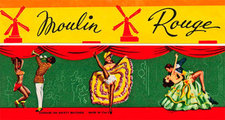
(image via)
Here’s a couple from the USSR, commemorating Soviet achievements in space exploration. Luna 2 was the second spacecraft launched toward the moon by the Soviet Union in 1959 (left). The one on the right appears to be a celebration of orbiting satellites:
(image credit: Jane McDevitt)
Here’s a Russian ice hockey face off:
(images credit: Jane McDevitt)
Hmmm... did they spell "science" wrong? -
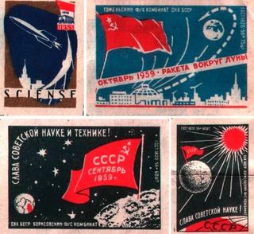
These ones feature Soviet warships and rockets during the Cold War:
(images credit: Jane McDevitt)
Soviet labels warned against the dangers of falling leaves on the road... and crossing tracks ahead of the train:
"Do not use home-made tubs to swim in" (left) and "poisoned water kills fish" (it does, indeed):
"Don't blow fish up with dynamite!" (left):
This Czech sausage is so good, even a normally herbivorous rabbit appears determined to eat it! -
(images credit: Jane McDevitt)
Here’s another Czech label, advising children of the dangers of playing in the road (left)... while this Czech label reminds people of the perils of alcohol (right):
(images via Jane McDevitt)
How could any German cat, or indeed any nationality of feline, resist following this fisherman? (left):
(images via Jane McDevitt)
This Japanese label features a tiger with a wool spinner known as a swift (left)... Right image: maybe no one asked this tiger if he wanted to pose for a matchbox label? -
(images via 1, 2)
Here’s a monkey riding on a deer, very weird... and on the globe:
(images via 1, 2)
This strange label from Finland is actually advertising pajamas:
(image via)
This circus themed one from Russia dates from 1960 (left):
(image via)
Here are some great designs from Japan. This bicycle built for five is from 1910 (left). The one on the right dates from the same year:
(images via 1, 2)
This very striking dragon design was created in 1920 (left). On the right are "Thumbs Up!" dragons -
(images via 1, 2)
This playful elephant on a seesaw appeared in Japan in 1935 (left). On the right: just in case you needed instructions that matches could be used to light a cigarette:
(images via)
Indian label, showing black cat leaping through the yellow circle (left)... "Golden Eye" on the right is not a poster for James Bond movie, of course (but certainly looks very stylish):
(image via)
Some strange ones from Thailand, including Felix the Cat and Charlie Chaplin:
(images via)
This winged horse label was made in India:
(image via)
The Rocket Match company operated in Saudi Arabia many years ago:
(image via)
And finally, the one we like the most: "Let's Breed Rabbits! It's Never Boring, Very Useful and Profitable!":
(image via)
READ THE FIRST PART HERE ->
|
|
. . . |
|
|
|
|
Tweet |
|
2012-11-08T17:00:00.004-08:00
Link Latte 191
Link Latte 191
#191 - Week of November 7, 2012
Here's who should've been elected - [The Hero!]
Amazing List of Disney's Historic Failures - [interesting]
Spaceship House Built Outside Moscow - [pics, transl.]
Stunning Surreal Art: Igor Morski - [wow art]
Have fun exploding nuclear bombs & supervolcanoes - [cool site]
SuperStratos: Impressive Huge Futuristic Plane - [scifi art]
Super-Bizarre Flower Structures - [futurism art]
Strangest Air Traffic Control Towers - [architecture]
Still the most surreal underwater image - [wow pic]
Super Tesla Gun, by Steve Ward - [geek tech]
... And How to Build One - [Tesla Coil Design, full manual]
Creepy? Excerpts from Deteriorated Silent Films - [videos]
Biggest Jumbo Jet with Sleeping Couches! more - [airplanes]
The Cold War "Kitchen Debate", script, video - [history]
Most Terrifying Weapon: Documentary - [wow weapon]
Most Successful Pirate Ever: a Chinese Lady - [weird history]
Sweden Wants Your Trash, Badly - [science]
Wow! 3D Animated View of a Nebula - [gif, scroll down]
Prehistoric Cat-sized Horse - [nature, cute?]
Mechanical Laser-Cut Gear-Fractal Computer! - [what a title]
Nested Fractal Gears, even better - [mesmerizing]
Pretty Entertaining Japanese Comedy Duo - [fun video]
Tough Bridge vs. Trucks - [wow video]
When Television Was Young - [cool video]
Launching the Space Tiger w/30,000 bottle rockets! - [wow video]
Airport Approach: Like Puppets on a String - [cool video]
Icy Roads in Russia: "Time to Run!" - [wow video]
Stubborn Cat Gets Into a Box - [fun video]
Extreme Off-Road, Track, Underwater - [wow videos]
Be-A-Doll: Get Action Figures of your Loved Ones - [great gift idea]
Deadliest Rock Concerts, Weirdest Air Disasters - [cool info]
Craziest Costumes for Dogs - [compilation]SEE ALL OTHER LINK LATTE ISSUES HERE
 #191
#191 -
Week of November 7, 2012
Here's who should've been elected -
[The Hero!]
Amazing List of Disney's Historic Failures -
[interesting]
Spaceship House Built Outside Moscow -
[pics, transl.]
Stunning Surreal Art: Igor Morski -
[wow art]
Have fun exploding nuclear bombs & supervolcanoes -
[cool site]
SuperStratos: Impressive Huge Futuristic Plane -
[scifi art]
Super-Bizarre Flower Structures -
[futurism art]
Strangest Air Traffic Control Towers -
[architecture]
Still the most surreal underwater image -
[wow pic]
Super Tesla Gun, by Steve Ward -
[geek tech]
... And How to Build One -
[Tesla Coil Design, full manual]
Creepy? Excerpts from Deteriorated Silent Films -
[videos]
Biggest Jumbo Jet with Sleeping Couches! more -
[airplanes]
The Cold War "Kitchen Debate", script, video -
[history]
Most Terrifying Weapon: Documentary -
[wow weapon]
Most Successful Pirate Ever: a Chinese Lady -
[weird history]
Sweden Wants Your Trash, Badly -
[science]
Wow! 3D Animated View of a Nebula -
[gif, scroll down]
Prehistoric Cat-sized Horse -
[nature, cute?]
Mechanical Laser-Cut Gear-Fractal Computer! -
[what a title]
Nested Fractal Gears, even better -
[mesmerizing]
Pretty Entertaining Japanese Comedy Duo -
[fun video]
Tough Bridge vs. Trucks -
[wow video]
When Television Was Young -
[cool video]
Launching the Space Tiger w/30,000 bottle rockets! -
[wow video]
Airport Approach: Like Puppets on a String -
[cool video]
Icy Roads in Russia: "Time to Run!" -
[wow video]
Stubborn Cat Gets Into a Box -
[fun video]
Extreme Off-Road, Track, Underwater -
[wow videos]
Be-A-Doll: Get Action Figures of your Loved Ones -
[great gift idea]
Deadliest Rock Concerts, Weirdest Air Disasters -
[cool info]
Craziest Costumes for Dogs -
[compilation]SEE ALL OTHER LINK LATTE ISSUES HERE
2012-11-01T21:25:00.000-07:00
Huge Off-Highway Road Trains
Huge Off-Highway Road Trains
"QUANTUM SHOT" #370(rev)
Link - article by Avi Abrams 1. The ETF Haul Train: this thing looks like it's all set to conquer the Moon, or Mars (with little modification):
This huge Road Train (or Haul Train) developed by ETF Trucks of UAE and Germany is a fantastic project - the ultra-powerful, yet highly efficient piece of "monster machinery" looks like a "wet dream" of every miniature train enthusiast, apocalyptic cult follower, or a Mad Max movie sequel producer. United Arab Emirates once again set out to conquer desert wastes - this time with 3,700 camel (er...horse) power engine under each hood.(all images copyright and under permission of ETF Trucks - click to enlarge)
Here is how ETF trucks look when linked together in a mining haul train (each truck has MULTIPLE engines, totaling up to 3700 hp):
The company promises payloads from 309 to 1520 US tons (280-1370 metric tons) and huge operator cost savings - after all, only one operator is required per train. The concept system also features in-pit loading (with help of addional mechanism) and possibility of easy unloading to cargo ships.
The previous version of this Ultra-Class truck also looked very impressive. This iteration of the Haul Train consisted of two locomotives, one at each end - allowing the train to easily move in either direction.
Each vehicle in this train has its own all-wheel-drive and all-wheel-steering by-wire, featuring the ability of some wheels (middle axle-lines) to be lifted during the empty haul:
The ETF road train uses electric drive system which is unique in the industry; also, the concept of hooking up many trucks provides costs savings of more than 25%. So far, the company has two truck building facilities, one in Germany and one in UAE.2. Overland Train in Arizona, 1963 - A Beast of a Machine!
Seen at Yuma Proving grounds in Arizona in 1962, this fantastic 565-feet-long Overland Train was tested in a configuration of the control car, ten cargo cars and two power-generating cars. It could deliver 150 tons payload and boasted fully-appointed living quarters inside the leading car:(images via)
I like this top view, where all cargo cars are forming a circle like pioneer wagons in a Western movie! -
"The control cab is all that remains of The Overland Train today, and it may be viewed at the Yuma Proving Ground Heritage Center. The rest of the Overland Train was sold to a Yuma scrap dealer." (more
If you encounter one of these approaching from the opposite direction on a single lane highway such as the Barrier or Tanami, you're left with two options. Pull over & out of there way & quickly, or put your head between your legs & kiss your ass goodbye! Because these things can't & won't swerve."(image credit: Heath Raymond)
This video segment shows such road trains in action, and also tells about the longest "train" so far - "The Centipede":
url6. Nazi's super-truck that nobody expected (and hardly anybody knows about)
Well, these talented engineers of Nazi Germany did come up with a supertruck / road-train for harsh cross-country trips - and what's more important, for crossing mine fields. The concept was quite elaborate, though half-realized:
The modeling society at Militaar has come up with a miniature of this exceptional super-truck:(images credit Militaar)
As this vehicle was primarily designed for crossing minefields, it featured solid tires (with almost no body structure around them) and the heavily armored cab. It seems to be an ancestor of the MRAP Mine Resistant Ambush Protected Vehicles. CONTINUE TO "WORLD'S MOST POWERFUL MOBILE CRANE" ->READ THE REST OF OUR "TECHNOLOGY" SERIES ->
. . .
Tweet
"QUANTUM SHOT" #370(rev)
Link - article by Avi Abrams
1. The ETF Haul Train: this thing looks like it's all set to conquer the Moon, or Mars (with little modification):
This huge Road Train (or Haul Train) developed by ETF Trucks of UAE and Germany is a fantastic project - the ultra-powerful, yet highly efficient piece of "monster machinery" looks like a "wet dream" of every miniature train enthusiast, apocalyptic cult follower, or a Mad Max movie sequel producer. United Arab Emirates once again set out to conquer desert wastes - this time with 3,700 camel (er...horse) power engine under each hood.

(all images copyright and under permission of ETF Trucks - click to enlarge)
Here is how ETF trucks look when linked together in a mining haul train (each truck has MULTIPLE engines, totaling up to 3700 hp):
The company promises payloads from 309 to 1520 US tons (280-1370 metric tons) and huge operator cost savings - after all, only one operator is required per train. The concept system also features in-pit loading (with help of addional mechanism) and possibility of easy unloading to cargo ships.
The previous version of this Ultra-Class truck also looked very impressive. This iteration of the Haul Train consisted of two locomotives, one at each end - allowing the train to easily move in either direction.
Each vehicle in this train has its own all-wheel-drive and all-wheel-steering by-wire, featuring the ability of some wheels (middle axle-lines) to be lifted during the empty haul:
The ETF road train uses electric drive system which is unique in the industry; also, the concept of hooking up many trucks provides costs savings of more than 25%. So far, the company has two truck building facilities, one in Germany and one in UAE.
2. Overland Train in Arizona, 1963 - A Beast of a Machine!
Seen at Yuma Proving grounds in Arizona in 1962, this fantastic 565-feet-long Overland Train was tested in a configuration of the control car, ten cargo cars and two power-generating cars. It could deliver 150 tons payload and boasted fully-appointed living quarters inside the leading car:

(images via)
I like this top view, where all cargo cars are forming a circle like pioneer wagons in a Western movie! -
"The control cab is all that remains of The Overland Train today, and it may be viewed at the Yuma Proving Ground Heritage Center. The rest of the Overland Train was sold to a Yuma scrap dealer." (more
If you encounter one of these approaching from the opposite direction on a single lane highway such as the Barrier or Tanami, you're left with two options. Pull over & out of there way & quickly, or put your head between your legs & kiss your ass goodbye! Because these things can't & won't swerve."
(image credit: Heath Raymond)
This video segment shows such road trains in action, and also tells about the longest "train" so far - "The Centipede":
url
6. Nazi's super-truck that nobody expected (and hardly anybody knows about)
Well, these talented engineers of Nazi Germany did come up with a supertruck / road-train for harsh cross-country trips - and what's more important, for crossing mine fields. The concept was quite elaborate, though half-realized:
The modeling society at Militaar has come up with a miniature of this exceptional super-truck:
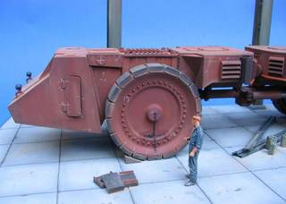
(images credit Militaar)
As this vehicle was primarily designed for crossing minefields, it featured solid tires (with almost no body structure around them) and the heavily armored cab. It seems to be an ancestor of the MRAP Mine Resistant Ambush Protected Vehicles.
CONTINUE TO "WORLD'S MOST POWERFUL MOBILE CRANE" ->
READ THE REST OF OUR "TECHNOLOGY" SERIES ->
|
|
. . . |
|
|
|
|
Tweet |
|
2012-10-24T18:26:00.000-07:00
Unusual and Fascinating Coins & Currency, Part 2
Unusual and Fascinating Coins & Currency, Part 2
"QUANTUM SHOT" #802
Link - article by Simon Rose and Avi Abrams "Money, money, money; must be funny; in a rich man's world"
There seems to be no shortage of strange and weird varieties of coins and banknotes that are put in circulation around the world. In our previous article about unusual currency, we featured some of the more unusual items of currency, both past and present, from a range of different countries. This time we take another look at the fascinating, unusual and at times simply bizarre types of money that’s been issued over the course of the last hundred years or so. You can check out our first look at unusual currency here.
Here’s a banknote from the Russian Empire, featuring one of the realm’s most famous rulers, Catherine the Great. This 100 ruble banknote was issued in 1910, after which the empire would very soon be consigned to history:(image via, click to enlarge)
Following the Russian Revolution in 1917, more than 3000 denominations of currency were issued during the chaos of the civil war. Banknotes would sometimes be legal tender all over the entire territory of the former empire from Europe to the Pacific and at others only be valid in certain regions. The text on these banknotes could have various meanings, such as the names of local government officials, words connected to the area where the currency was issued and so on. They also usually had text in a number of different languages encouraging workers of the world to unite.(images via)
This one billion ruble banknote is from the Caucasian Socialist Federative Soviet Republic, issued during hyperinflation in the early 1920s:(images via)
Eventually, things settled down... However, like the Russian Empire that preceded it, the USSR also became a thing of the past as a variety of independent republics came into existence. When the region of Transnistria first broke free from Moldovan rule in the early 1990s, they didn’t have their own currency. The solution? Stick a Transnistrian postage stamp onto an old Soviet banknote:(image credit: Damian Corrigan)
Today, Transnistria located in a strip of territory between the Dniester River and Ukraine, isn’t recognized internationally as an independent state. They do however have all the trapping of a de facto country and use the Transnistrian ruble as their official currency:(image via)
The former European country of Yugoslavia experienced rampant hyperinflation from 1989 until currency reforms took place in 1994. The highest denomination in 1988 was 50,000 Dinara, but this had changed to 500,000,000,000 Dinara by 1994:(image via)
The history of coins requires a special article. Here we will only mention some historically weird examples: check out this Canadian Wooden Nickel:(image via)
Left image below: the Chinese ancient knife money; on the right is a Manchuko fiber coin from Manchuria:(image via)
This very odd three-dimensional "geometric" money is from Somalia:(image via)
Somalia actually seems to specialize in issuing unusual and creative currency. Here are some coins in the shape of motorcycle, guitars and sports cars:(image via)
Full guitar set:(image credit: JoelsCoins.com)
Sports car money! -(image via)
Another place that specializes in designing coins with a difference is the Republic of Palau in the Western Pacific. On the 150th anniversary of the first apparition witnessed by St. Bernadette at Lourdes in southern France, the Republic of Palau issued a commemorative coin. It has a pipette containing authentic Lourdes water, very handy if you’re not able to make the pilgrimage yourself:(image via)
Also from Palau, is this rather odd coin, commemorating the 600th anniversary of the Battle of Grunwald, one of the largest battles in the medieval period, which took place in what is now northern Poland but was once part of German territory. Palau’s history as a former German colony doubtlessly has a lot to do with this choice of design (left image below):(images via 1, 2)
Right image above: You can rub this coin to get a scent of the ocean!
While this Palau coin has an embedded green freshwater pearl, a lucky symbol locally that is also supposed to bring you happiness:(image via PowerCoin, used by permission)
Another coin with a pearl, this time shaped as a seashell - issued in Palau in 2011:(image via)
And here's probably a pinnacle of custom coin design - a coin with the nano chip inside! And not just a nano chip: "The Sistine Chapel ceiling, Michelangelo's masterpiece, is entirely depicted on the Nano Chip embedded in the coin. Onto the size of a finger nail a very high resolution image is engraved with the technology of microelectronics on an ultra-planar Nano Chip, which is produced in a dust free environment out of high purity quartz and in an extreme vacuum.":(image via)Easter Island is famous for its monumental statues and for these pop-up head coins. This silver crown was designed so that the miniature statues can be inserted vertically into a slot on the coin, creating a three-dimensional version of the famous Easter Island landmarks you can literally hold in the palm of your hand (below, left):(right image credit: Fleur-de-Coin)
Right image above: Another Pacific island nation produced this oddly shaped coin in 2002. To commemorate the introduction of the Euro common currency, this Republic of Nauru coin is in the shape of the nations that comprise the European Union.
Speaking of the Euro, the adoption of the single currency saw the demise of the variety colourful banknotes and distinctive coins formerly used in the various European countries. People speaking many different languages, all across the continent, now use the same type of money.
Surprisingly, a similar concept was also in operation over a century ago. However, despite the many nationalities using the currency, the Empire’s monetary union only combined the financial systems of Austria and Hungary. In the modern Eurozone there are a lot more member states, each with their own parliaments, tax systems, banking regulations and so on. This 20 Kronen-banknote from Austria-Hungary in 1913 is in Czech, Polish, Ruthenian (Ukrainian), Italian, Slovene, Croatian, Serbian, Romanian, while the reverse side is in Hungarian:(image via)
Here is a coin that can talk. On June 26, 1963, US president John F. Kennedy spoke his historic words that “all free men, wherever they may live, are citizens of Berlin, and, therefore, as a free man, I take pride in the words Ich bin ein Berliner”. If you missed hearing it back then, you can always listen to it in Kennedy’s own voice on this commemorative silver coin from Mongolia:(images via)
...And here is a coin that displays television! This Cook Islands coin commemorates the 80 years of television and includes an interesting hologram insert:(images via)
This Saint Thomas & Prince Island 1999-issue coin includes a clock counting the "Millennium Time":(images via)
Speaking about coins with various inserts, these can get quite creative... here is the Ivory Coast coin with the actual bit of a mammoth's fossil inserted inside! -(images via)
And even more amazingly, these coins from the Cook Islands include in it pieces of the Moon and of planet Mars!:(images via)
On the 20th anniversary of Concorde Britain issued a coin with the titanium bit insert, made from the actual heat shield of the Concorde! (below, left):(image via)
Right image above: the special-issue coin from Las Vegas predictably features an actual card corner insert.
The following Canadian coin displays an intricate fluorescent image of the dinosaur when looked at in the dark:(image via)
This crown made of copper is known as the world’s first pyramid coin, although the shape is actually a triangle with rounded corners. You’d be forgiven for attributing this coin to modern or ancient Egypt, but it was in fact created in the Isle of Man in 2008 (below, left):(image via 1, 2)
Right image above: Another triangular coin, and rather appropriate considering its place of origin, is this one from the home of the famous Bermuda Triangle.What 1 million Dollars in a single coin look like:
And finally, there may have been some large denominations of currency due to hyperinflation but how about this? Shown here at the 2010 Vancouver Olympics, this 100 kg coin has a face value of one million Canadian dollars and is made of 99.999% pure gold:(image credit: Thomas Glanz)READ THE FIRST PART HERE! ->Check out our popular "VINTAGE" category ->
. . .
Tweet
"QUANTUM SHOT" #802
Link - article by Simon Rose and Avi Abrams
"Money, money, money; must be funny; in a rich man's world"
There seems to be no shortage of strange and weird varieties of coins and banknotes that are put in circulation around the world. In our previous article about unusual currency, we featured some of the more unusual items of currency, both past and present, from a range of different countries. This time we take another look at the fascinating, unusual and at times simply bizarre types of money that’s been issued over the course of the last hundred years or so. You can check out our first look at unusual currency here.
Here’s a banknote from the Russian Empire, featuring one of the realm’s most famous rulers, Catherine the Great. This 100 ruble banknote was issued in 1910, after which the empire would very soon be consigned to history:
(image via, click to enlarge)
Following the Russian Revolution in 1917, more than 3000 denominations of currency were issued during the chaos of the civil war. Banknotes would sometimes be legal tender all over the entire territory of the former empire from Europe to the Pacific and at others only be valid in certain regions. The text on these banknotes could have various meanings, such as the names of local government officials, words connected to the area where the currency was issued and so on. They also usually had text in a number of different languages encouraging workers of the world to unite.
(images via)
This one billion ruble banknote is from the Caucasian Socialist Federative Soviet Republic, issued during hyperinflation in the early 1920s:
(images via)
Eventually, things settled down... However, like the Russian Empire that preceded it, the USSR also became a thing of the past as a variety of independent republics came into existence. When the region of Transnistria first broke free from Moldovan rule in the early 1990s, they didn’t have their own currency. The solution? Stick a Transnistrian postage stamp onto an old Soviet banknote:
(image credit: Damian Corrigan)
Today, Transnistria located in a strip of territory between the Dniester River and Ukraine, isn’t recognized internationally as an independent state. They do however have all the trapping of a de facto country and use the Transnistrian ruble as their official currency:
(image via)
The former European country of Yugoslavia experienced rampant hyperinflation from 1989 until currency reforms took place in 1994. The highest denomination in 1988 was 50,000 Dinara, but this had changed to 500,000,000,000 Dinara by 1994:
(image via)
The history of coins requires a special article. Here we will only mention some historically weird examples: check out this Canadian Wooden Nickel:
(image via)
Left image below: the Chinese ancient knife money; on the right is a Manchuko fiber coin from Manchuria:

(image via)
This very odd three-dimensional "geometric" money is from Somalia:
(image via)
Somalia actually seems to specialize in issuing unusual and creative currency. Here are some coins in the shape of motorcycle, guitars and sports cars:
(image via)
Full guitar set:
(image credit: JoelsCoins.com)
Sports car money! -
(image via)
Another place that specializes in designing coins with a difference is the Republic of Palau in the Western Pacific. On the 150th anniversary of the first apparition witnessed by St. Bernadette at Lourdes in southern France, the Republic of Palau issued a commemorative coin. It has a pipette containing authentic Lourdes water, very handy if you’re not able to make the pilgrimage yourself:
(image via)
Also from Palau, is this rather odd coin, commemorating the 600th anniversary of the Battle of Grunwald, one of the largest battles in the medieval period, which took place in what is now northern Poland but was once part of German territory. Palau’s history as a former German colony doubtlessly has a lot to do with this choice of design (left image below):
(images via 1, 2)
Right image above: You can rub this coin to get a scent of the ocean!
While this Palau coin has an embedded green freshwater pearl, a lucky symbol locally that is also supposed to bring you happiness:
(image via PowerCoin, used by permission)
Another coin with a pearl, this time shaped as a seashell - issued in Palau in 2011:
(image via)
And here's probably a pinnacle of custom coin design - a coin with the nano chip inside! And not just a nano chip: "The Sistine Chapel ceiling, Michelangelo's masterpiece, is entirely depicted on the Nano Chip embedded in the coin. Onto the size of a finger nail a very high resolution image is engraved with the technology of microelectronics on an ultra-planar Nano Chip, which is produced in a dust free environment out of high purity quartz and in an extreme vacuum.":
(image via)
Easter Island is famous for its monumental statues and for these pop-up head coins. This silver crown was designed so that the miniature statues can be inserted vertically into a slot on the coin, creating a three-dimensional version of the famous Easter Island landmarks you can literally hold in the palm of your hand (below, left):

(right image credit: Fleur-de-Coin)
Right image above: Another Pacific island nation produced this oddly shaped coin in 2002. To commemorate the introduction of the Euro common currency, this Republic of Nauru coin is in the shape of the nations that comprise the European Union.
Speaking of the Euro, the adoption of the single currency saw the demise of the variety colourful banknotes and distinctive coins formerly used in the various European countries. People speaking many different languages, all across the continent, now use the same type of money.
Surprisingly, a similar concept was also in operation over a century ago. However, despite the many nationalities using the currency, the Empire’s monetary union only combined the financial systems of Austria and Hungary. In the modern Eurozone there are a lot more member states, each with their own parliaments, tax systems, banking regulations and so on. This 20 Kronen-banknote from Austria-Hungary in 1913 is in Czech, Polish, Ruthenian (Ukrainian), Italian, Slovene, Croatian, Serbian, Romanian, while the reverse side is in Hungarian:
(image via)
Here is a coin that can talk. On June 26, 1963, US president John F. Kennedy spoke his historic words that “all free men, wherever they may live, are citizens of Berlin, and, therefore, as a free man, I take pride in the words Ich bin ein Berliner”. If you missed hearing it back then, you can always listen to it in Kennedy’s own voice on this commemorative silver coin from Mongolia:
(images via)
...And here is a coin that displays television! This Cook Islands coin commemorates the 80 years of television and includes an interesting hologram insert:
(images via)
This Saint Thomas & Prince Island 1999-issue coin includes a clock counting the "Millennium Time":
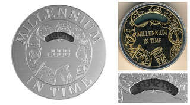
(images via)
Speaking about coins with various inserts, these can get quite creative... here is the Ivory Coast coin with the actual bit of a mammoth's fossil inserted inside! -
(images via)
And even more amazingly, these coins from the Cook Islands include in it pieces of the Moon and of planet Mars!:
(images via)
On the 20th anniversary of Concorde Britain issued a coin with the titanium bit insert, made from the actual heat shield of the Concorde! (below, left):
(image via)
Right image above: the special-issue coin from Las Vegas predictably features an actual card corner insert.
The following Canadian coin displays an intricate fluorescent image of the dinosaur when looked at in the dark:
(image via)
This crown made of copper is known as the world’s first pyramid coin, although the shape is actually a triangle with rounded corners. You’d be forgiven for attributing this coin to modern or ancient Egypt, but it was in fact created in the Isle of Man in 2008 (below, left):
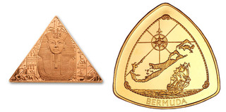
(image via 1, 2)
Right image above: Another triangular coin, and rather appropriate considering its place of origin, is this one from the home of the famous Bermuda Triangle.
What 1 million Dollars in a single coin look like:
And finally, there may have been some large denominations of currency due to hyperinflation but how about this? Shown here at the 2010 Vancouver Olympics, this 100 kg coin has a face value of one million Canadian dollars and is made of 99.999% pure gold:
(image credit: Thomas Glanz)
READ THE FIRST PART HERE! ->
Check out our popular "VINTAGE" category ->
|
|
. . . |
|
|
|
|
Tweet |
|
2012-10-18T18:05:00.002-07:00
Why Is It Dark at Night?
Why Is It Dark at Night?
Link
Scroll down for today's pictures & links.Why is it Dark at Night?
Or rather, to rephrase the question, Why is Space Dark?. Very cool, often mind-boggling short video. I'm sure you know all the facts, but this is a good show nevertheless.
Link
Today's pictures & links:Old Abandoned "Dome" Theater in Beirut, Lebanon
Quite impressive blob-like apparition: called Saboune (soap) by locals, it was designed by Lebanese architect Joseph Philippe Karam in the 1960s:(image credit: El Rais Fred, via Beirut City Guide)
------------The Most Unusual and HUGE "Rolling Tank"
Here is a truly bizarre 1944 Russian concept for a giant rolling armored cylinder. "Tanks on the inside powered the leviathan to roll it forward". More info and more strange concepts here!(image via, original unknown)
------------Fantastic Underwater Sculptures
There is a whole fascinating, lightly creepy world underwater, thanks to the recent creations of Jason deCaired Taylor: some people seem "zombified" by the sea, while others stand to attention, listening to some piano music, perhaps:(image credit: Jason deCaired Taylor)
"Taylor's art is like no other, a paradox of creation, constructed to be assimilated by the ocean and transformed from inert objects into living breathing coral reefs..." See more on the artist's website.
------------
Mixed fresh links for today:
Secrets of Sleep: Why We Need to Sleep? - [fascinating]
Inside Google's Data Centers - [incredible pics]
3D Street Art Combined with Augmented Reality - [illusion]
Super Funny: Trolling on London Subway - [funny signs!]
New-found Pictures of the "Rolling Stones" - [gallery]
Dan Grayber and His Mechanical Self-Serving Machines - [geek]
Crazy, Geeky Shower Curtains - [design]
Spiders in a box projected onto windows - [wow video]
Ducks See Water for the First Time - [must-see video]
Great Urban Car! - [wow video]
Frog Bar: Worthy Animation Project - [Kickstarter]
Bad Lip Reading of Presidential Debate - [it all makes sense now!]
A Guilty Dog... poor thing - [fun video]
Deadliest Epidemics in History - [wow info]
What type of credit card you should get - [useful pic]
------------ Greatest Hits of Photoshop Disasters: Nightmare Anatomy
When it rains, it pours... the recent slew of amateur and uninformed Photoshop work by various clueless advertising agencies has resulted in, you guessed it, big & hilarious update of Photoshop Disasters Greatest Hits! (image credit: PS Disasters)
It seems that human body is made out of rubber and conforms to the wildest wishes of graphic artists! Check out full gallery of side-splitting screwups at Photoshop Disasters page.
------------The Sleekest and Most Aerodynamic Gas Tank Truck Ever Designed
This is the 1935 "Diamond T" Doodlebug - 26 ft long sleek beauty, designed by H. W. Kizer... I certainly wish that they would resurrect this shape and form and put it out on modern streets to fill up gas stations. It was really "low-slung", as well - a mere 4 inches higher than a 1934 Ford sedan!(images via)
See more pics and info here.
------------"Mechtorians" by Doctor A.
This is steampunk robot art at its most evocative and sophisticated. See the whole gallery of these characters on Doctor A's website:(image credit: Doctor A.)
------------
The following is a short round-up of the best from our Facebook stream (which we update every day with unique material, not available on DRB otherwise):
Peggy, Anzac, and Cupcake - more pics and info: (image via)
Interesting room illusion by Luiz Eduardo Borges, Brazil - (image credit: Luiz Eduardo Borges)
If looks could kill... -(photo by Jan Lowe)
Bobby Darin's 1961 dream car! -(image via)
Someone had nothing to do in class... -(original unknown)
Smooth Ride! -(original unknown)
New "Super Machines" by Jan von Holleben - See more:(images credit: Jan von Holleben)
Wonderful glamour of the 1920s movies -
------------
Do not ride elephants, do not walk on elephants? Weird sign, indeed -(original unknown)
Lost deep in thought -(original unknown)
------------Rare & Somewhat Bizarre Soviet Presidential Limo: ZIL 111 Concept
Did you ever see three headlights on a car in a row?(image via Franticek Kada)
Here is another one, unauthorized:(original unknown)
------------Absinthe Sampling Kit: ALMOST as good as during Belle Epoque in Paris!
Are you an absintheur (having a passion for absinthe)? The famous "green fairy" is available from Absinthes.com. They sell cool "Absinthe Explore" kit and have a neat tutorial video on how to serve absinthe in a classic way.(images credit: Yury Seleznev, Deklofenak, courtesy of Shutterstock)
Interestingly, some of the most popular distilleries still use alembics that are over a century old to produce absinthe. Should make an interesting venture / expedition to see making of absinthe, methinks.
------------A true personal touch in care and packaging!
This is just an advertising stunt, but I'd like to see this made in real life! -(images via)
------------"Wild Wheelchairs", by a steampunk master Lance Greathouse
"I want it all! And I want it yesterday!" For all aspiring Dr. Evil characters out there, here are some wicked weaponized wheelchairs for starters:(images credit: Lance Greathouse)
See more "Dr. Evil" vehicles and devices here(images credit: Lance Greathouse)
------------(original unknown)
Here is a twisty marvel to behold:READ THE PREVIOUS ISSUE ->READ ALL BISCOTTI ISSUES HERE ->Make sure to check our daily updates on Facebook!
. . .
TweetFollow @DRBlend

Link
Scroll down for today's pictures & links.
Why is it Dark at Night?
Or rather, to rephrase the question, Why is Space Dark?. Very cool, often mind-boggling short video. I'm sure you know all the facts, but this is a good show nevertheless.
Link
Today's pictures & links:
Old Abandoned "Dome" Theater in Beirut, Lebanon
Quite impressive blob-like apparition: called Saboune (soap) by locals, it was designed by Lebanese architect Joseph Philippe Karam in the 1960s:
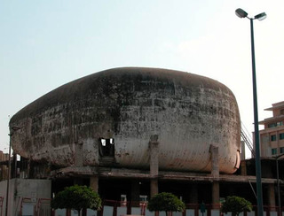
(image credit: El Rais Fred, via Beirut City Guide)
------------
The Most Unusual and HUGE "Rolling Tank"
Here is a truly bizarre 1944 Russian concept for a giant rolling armored cylinder. "Tanks on the inside powered the leviathan to roll it forward". More info and more strange concepts here!
(image via, original unknown)
------------
Fantastic Underwater Sculptures
There is a whole fascinating, lightly creepy world underwater, thanks to the recent creations of Jason deCaired Taylor: some people seem "zombified" by the sea, while others stand to attention, listening to some piano music, perhaps:
(image credit: Jason deCaired Taylor)
"Taylor's art is like no other, a paradox of creation, constructed to be assimilated by the ocean and transformed from inert objects into living breathing coral reefs..." See more on the artist's website.
------------
Mixed fresh links for today:
Secrets of Sleep: Why We Need to Sleep? - [fascinating]
Inside Google's Data Centers - [incredible pics]
3D Street Art Combined with Augmented Reality - [illusion]
Super Funny: Trolling on London Subway - [funny signs!]
New-found Pictures of the "Rolling Stones" - [gallery]
Dan Grayber and His Mechanical Self-Serving Machines - [geek]
Crazy, Geeky Shower Curtains - [design]
Spiders in a box projected onto windows - [wow video]
Ducks See Water for the First Time - [must-see video]
Great Urban Car! - [wow video]
Frog Bar: Worthy Animation Project - [Kickstarter]
Bad Lip Reading of Presidential Debate - [it all makes sense now!]
A Guilty Dog... poor thing - [fun video]
Deadliest Epidemics in History - [wow info]
What type of credit card you should get - [useful pic]
------------
Greatest Hits of Photoshop Disasters: Nightmare Anatomy
When it rains, it pours... the recent slew of amateur and uninformed Photoshop work by various clueless advertising agencies has resulted in, you guessed it, big & hilarious update of Photoshop Disasters Greatest Hits!
(image credit: PS Disasters)
It seems that human body is made out of rubber and conforms to the wildest wishes of graphic artists! Check out full gallery of side-splitting screwups at Photoshop Disasters page.
------------
The Sleekest and Most Aerodynamic Gas Tank Truck Ever Designed
This is the 1935 "Diamond T" Doodlebug - 26 ft long sleek beauty, designed by H. W. Kizer... I certainly wish that they would resurrect this shape and form and put it out on modern streets to fill up gas stations. It was really "low-slung", as well - a mere 4 inches higher than a 1934 Ford sedan!
(images via)
See more pics and info here.
------------
"Mechtorians" by Doctor A.
This is steampunk robot art at its most evocative and sophisticated. See the whole gallery of these characters on Doctor A's website:
(image credit: Doctor A.)
------------
The following is a short round-up of the best from our Facebook stream (which we update every day with unique material, not available on DRB otherwise):
Peggy, Anzac, and Cupcake - more pics and info:
(image via)
Interesting room illusion by Luiz Eduardo Borges, Brazil -
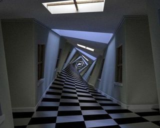
(image credit: Luiz Eduardo Borges)
If looks could kill... -
(photo by Jan Lowe)
Bobby Darin's 1961 dream car! -
(image via)
Someone had nothing to do in class... -
(original unknown)
Smooth Ride! -
(original unknown)
New "Super Machines" by Jan von Holleben - See more:
(images credit: Jan von Holleben)
Wonderful glamour of the 1920s movies -
------------
Do not ride elephants, do not walk on elephants? Weird sign, indeed -

(original unknown)
Lost deep in thought -
(original unknown)
------------
Rare & Somewhat Bizarre Soviet Presidential Limo: ZIL 111 Concept
Did you ever see three headlights on a car in a row?
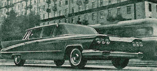
(image via Franticek Kada)
Here is another one, unauthorized:
(original unknown)
------------
Absinthe Sampling Kit: ALMOST as good as during Belle Epoque in Paris!
Are you an absintheur (having a passion for absinthe)? The famous "green fairy" is available from Absinthes.com. They sell cool "Absinthe Explore" kit and have a neat tutorial video on how to serve absinthe in a classic way.
(images credit: Yury Seleznev, Deklofenak, courtesy of Shutterstock)
Interestingly, some of the most popular distilleries still use alembics that are over a century old to produce absinthe. Should make an interesting venture / expedition to see making of absinthe, methinks.
------------
A true personal touch in care and packaging!
This is just an advertising stunt, but I'd like to see this made in real life! -
(images via)
------------
"Wild Wheelchairs", by a steampunk master Lance Greathouse
"I want it all! And I want it yesterday!" For all aspiring Dr. Evil characters out there, here are some wicked weaponized wheelchairs for starters:
(images credit: Lance Greathouse)
See more "Dr. Evil" vehicles and devices here
(images credit: Lance Greathouse)
------------
(original unknown)
Here is a twisty marvel to behold:
READ THE PREVIOUS ISSUE ->
READ ALL BISCOTTI ISSUES HERE ->
Make sure to check our daily updates on Facebook!
|
|
. . . |
|
|
|
|
TweetFollow @DRBlend |
|
2012-10-09T15:44:00.000-07:00
The Tatra T87: Streamlined, Fast and Mostly Unknown
The Tatra T87: Streamlined, Fast and Mostly Unknown
"QUANTUM SHOT" #800
Link - article by Mike Gulett Designed to resemble the German Graf Zeppelin dirigibles
We wrote about Tatra's streamlined cars before (also see other aerodynamically shaped cars in our older article). We received quite a good response, asking us to continue this series. Today we feature The Tatra T87 model, and more.(Futuristic Tatraplan posters; images via Frantisek Kada)(Vision VALUTA, early 1950s Tatra limousine concept, image credit: Frantisek Kada)
When one thinks about car manufacturers Czechoslovakia usually does not come to mind. However, it turns out that the Czech company Tatra is the third oldest automobile manufacturer in the world behind Daimler Mercedes-Benz and Peugeot. (premier of Tatraplan at the 1947 Prague Autosalon, image via Frantisek Kada, Czech News Agency)
The T87 has a unique body style; the streamlined shape was designed by the Austrian Dr. Hans Ledwinka, and was based on the Tatra 77. Paul Jaray, who designed the German Graf Zeppelin dirigibles, also provided many of the styling ideas.(image credit: Mike Gulett)
Tatra made many different models over the years in addition to the 1947 T87 4-Door Sedan shown here. The T87 is powered by a rear-mounted 2.9-liter air-cooled 90-degree overhead cam V8 engine that produces 85 horsepower allowing the T87 to reach a top speed of 100 MPH. This made it one of the fastest cars of the day. The driver needed to be careful when taking corners at speed because the engine is behind the rear axel like a Porsche 911 and could easily swing around to the front under sharp cornering.(image credit: Mike Gulett)
A fin in the sloping, vented fastback rear of the Tatra helps to divide the air pressure on both sides of the car, a technique later used in aircraft design. This finned rear also covered the engine and had no windows, which made rear visibility difficult. Air scoops on each side directly behind the rear side windows forced air into the engine compartment, an important feature since the engine was air-cooled.
The predecessor to the T87, the T77, was the first production car designed with aerodynamic drag as a design feature. However, Ledwinka wanted more – he worked to develop the T87 as lighter, smaller and faster car.(images via Paul Malon)
The T87 was one of the fastest production cars of its day, was very luxurious and unique in the market.
German officers praised the Tatra during World War II for its speed and handling. Unfortunately during the war the Nazis took over Tatra. This did not work out well for Ledwinka because he was forced to work on Nazi military vehicles for six years. He also spent six years in prison after the war for collaborating with the Nazis.
The Czech government vindicated him in 1992, however, since Ledwinka died in 1967 this was too late to help him.(images credit: Mike Gulett)
Other car manufacturers copied many design elements of the Tatra, including Dr. Ferdinand Porsche when he designed the Volkswagen Beetle. You can see that the T87 looks like a large prototype of the Volkswagen Beetle.
This led to a lawsuit between Tatra and Volkswagen, which Tatra eventually won – long after WWII had ended.(image credit: Mike Gulett)
There were approximately 3,000 T87s made between 1936 and 1950 when Tatra changed its focus to trucks instead of passenger cars. Tatra still makes trucks today.
The Tatra T87 is a very interesting car that advanced the technology of automobile design. Most of us have never seen, and maybe have never heard of, a Tatra car before.(image credit: Frantisek Kada)
If Dr. Hans Ledwinka had worked in the US, Italy, the UK or Germany he would be very famous for his contributions to automobile design. And it is possible that if there had not been the intervention of WWII Tatra might be a company like Porsche or Volkswagen that we all know so well today.(images credit: Frantisek Kada)
-----About Mike Gulett: Mike Gulett writes the popular classic car blog, My Car Quest. He writes about classic cars, race cars, other cars that interest him and the people who made or drove those cars. He is also a car collector and writes from the perspective of a collector and an enthusiast.
Mike started publishing My Car Quest in November 2010 and has lived and worked in the San Francisco Bay Area for many years where he still lives with his wife and a few cats. His latest eBook, “Twenty-Five Affordable Classic Cars” is available on Amazon. His Amazon author page lists his other books.CONTINUE TO "AERODYNAMIC MARVELS" SERIES! ->CHECK OUT OUR "AMAZING AUTOMOBILES" SERIES ->
. . .
Tweet
"QUANTUM SHOT" #800
Link - article by Mike Gulett
Designed to resemble the German Graf Zeppelin dirigibles
We wrote about Tatra's streamlined cars before (also see other aerodynamically shaped cars in our older article). We received quite a good response, asking us to continue this series. Today we feature The Tatra T87 model, and more.
(Futuristic Tatraplan posters; images via Frantisek Kada)
(Vision VALUTA, early 1950s Tatra limousine concept, image credit: Frantisek Kada)
When one thinks about car manufacturers Czechoslovakia usually does not come to mind. However, it turns out that the Czech company Tatra is the third oldest automobile manufacturer in the world behind Daimler Mercedes-Benz and Peugeot.
(premier of Tatraplan at the 1947 Prague Autosalon, image via Frantisek Kada, Czech News Agency)
The T87 has a unique body style; the streamlined shape was designed by the Austrian Dr. Hans Ledwinka, and was based on the Tatra 77. Paul Jaray, who designed the German Graf Zeppelin dirigibles, also provided many of the styling ideas.
(image credit: Mike Gulett)
Tatra made many different models over the years in addition to the 1947 T87 4-Door Sedan shown here. The T87 is powered by a rear-mounted 2.9-liter air-cooled 90-degree overhead cam V8 engine that produces 85 horsepower allowing the T87 to reach a top speed of 100 MPH. This made it one of the fastest cars of the day. The driver needed to be careful when taking corners at speed because the engine is behind the rear axel like a Porsche 911 and could easily swing around to the front under sharp cornering.
(image credit: Mike Gulett)
A fin in the sloping, vented fastback rear of the Tatra helps to divide the air pressure on both sides of the car, a technique later used in aircraft design. This finned rear also covered the engine and had no windows, which made rear visibility difficult. Air scoops on each side directly behind the rear side windows forced air into the engine compartment, an important feature since the engine was air-cooled.
The predecessor to the T87, the T77, was the first production car designed with aerodynamic drag as a design feature. However, Ledwinka wanted more – he worked to develop the T87 as lighter, smaller and faster car.
(images via Paul Malon)
The T87 was one of the fastest production cars of its day, was very luxurious and unique in the market.
German officers praised the Tatra during World War II for its speed and handling. Unfortunately during the war the Nazis took over Tatra. This did not work out well for Ledwinka because he was forced to work on Nazi military vehicles for six years. He also spent six years in prison after the war for collaborating with the Nazis.
The Czech government vindicated him in 1992, however, since Ledwinka died in 1967 this was too late to help him.
(images credit: Mike Gulett)
Other car manufacturers copied many design elements of the Tatra, including Dr. Ferdinand Porsche when he designed the Volkswagen Beetle. You can see that the T87 looks like a large prototype of the Volkswagen Beetle.
This led to a lawsuit between Tatra and Volkswagen, which Tatra eventually won – long after WWII had ended.
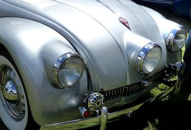
(image credit: Mike Gulett)
There were approximately 3,000 T87s made between 1936 and 1950 when Tatra changed its focus to trucks instead of passenger cars. Tatra still makes trucks today.
The Tatra T87 is a very interesting car that advanced the technology of automobile design. Most of us have never seen, and maybe have never heard of, a Tatra car before.
(image credit: Frantisek Kada)
If Dr. Hans Ledwinka had worked in the US, Italy, the UK or Germany he would be very famous for his contributions to automobile design. And it is possible that if there had not been the intervention of WWII Tatra might be a company like Porsche or Volkswagen that we all know so well today.
(images credit: Frantisek Kada)
-----
About Mike Gulett: Mike Gulett writes the popular classic car blog, My Car Quest. He writes about classic cars, race cars, other cars that interest him and the people who made or drove those cars. He is also a car collector and writes from the perspective of a collector and an enthusiast.
Mike started publishing My Car Quest in November 2010 and has lived and worked in the San Francisco Bay Area for many years where he still lives with his wife and a few cats. His latest eBook, “Twenty-Five Affordable Classic Cars” is available on Amazon. His Amazon author page lists his other books.
CONTINUE TO "AERODYNAMIC MARVELS" SERIES! ->
CHECK OUT OUR "AMAZING AUTOMOBILES" SERIES ->
|
|
. . . |
|
|
|
|
Tweet |
|
2012-10-04T15:00:00.002-07:00
Link Latte 189
Link Latte 189
#189 - Week of October 3, 2012
Farthest-Ever View of the Universe (pic) - [wow space]
Mind-Boggling Microscopic Photos - [wow photography]
What would really happen if the lights went out. - [scary scenario]
Theo Jansen, again... a must-see - [wow video]
Epic Stalin-Era Russian-American, Love Story (photo) - [biography, transl.]
Really Extreme Wood Sculptures - [art, scroll down]
The Hall of Unwanted Dotcoms - [any takers?]
Exciting! Pagani Huayra - [wow supercar]
Spooky, Awesome Abandoned Observatory - [abandoned]
Really Exceptional Street Art - [wow art]
Warehouse Robot Battles - [crazy tech]
Predictions From The Father of Science Fiction - [futurism]
Most Famous Photo Hoaxes in History- [interesting]
Deep Fried Gadgets... (Shudder) - [weird art]
How to Drive a Mars Rover - [cool, geek info]
Race Driver Freaking Out His Wife - [video]
Hospitals Caught in the Disaster Zones - [harrowing]
Futuristic Proposals from Shimizu Corp., Japan - [huge!]
Famous People Who Died Penniless - [weird]
Put your PC on the Moon (for the ultimate protection) - [weird idea]
Neat Camera View of Soviet Jet Fighter - [cool video]
Hand Feeding Wild Stingrays - [wow video]
Yet Another Rube Goldberg Cool Machine - [wow video]
Remember "Daddy Cool"? Here is the Original - [video, cool dance]
Russian Police: Highway Terror - [wow video]
HP Scanner and other hardware sing a song - [wow video]
Funny Om Nom Nom Bird - [fun video]
Saving the Truck (Almost) - [wow video]
Extreme Skydive From 120,000 Feet - [wow video]
The History of High Heels - [neat info]SEE ALL OTHER LINK LATTE ISSUES HERE
#189 -
Week of October 3, 2012
Farthest-Ever View of the Universe (pic) -
[wow space]
Mind-Boggling Microscopic Photos -
[wow photography]
What would really happen if the lights went out. -
[scary scenario]
Theo Jansen, again... a must-see -
[wow video]
Epic Stalin-Era Russian-American, Love Story (photo) -
[biography, transl.]
Really Extreme Wood Sculptures -
[art, scroll down]
The Hall of Unwanted Dotcoms -
[any takers?]
Exciting! Pagani Huayra -
[wow supercar]
Spooky, Awesome Abandoned Observatory -
[abandoned]
Really Exceptional Street Art -
[wow art]
Warehouse Robot Battles -
[crazy tech]
Predictions From The Father of Science Fiction -
[futurism]
Most Famous Photo Hoaxes in History-
[interesting]
Deep Fried Gadgets... (Shudder) -
[weird art]
How to Drive a Mars Rover -
[cool, geek info]
Race Driver Freaking Out His Wife -
[video]
Hospitals Caught in the Disaster Zones -
[harrowing]
Futuristic Proposals from Shimizu Corp., Japan -
[huge!]
Famous People Who Died Penniless -
[weird]
Put your PC on the Moon (for the ultimate protection) -
[weird idea]
Neat Camera View of Soviet Jet Fighter -
[cool video]
Hand Feeding Wild Stingrays -
[wow video]
Yet Another Rube Goldberg Cool Machine -
[wow video]
Remember "Daddy Cool"? Here is the Original -
[video, cool dance]
Russian Police: Highway Terror -
[wow video]
HP Scanner and other hardware sing a song -
[wow video]
Funny Om Nom Nom Bird -
[fun video]
Saving the Truck (Almost) -
[wow video]
Extreme Skydive From 120,000 Feet -
[wow video]
The History of High Heels -
[neat info]SEE ALL OTHER LINK LATTE ISSUES HERE
2012-09-28T16:25:00.000-07:00
Fascinating Chemistry Photos
Fascinating Chemistry Photos
"QUANTUM SHOT" #799
Link - article by Avi Abrams and Alex Carpenter Fantastic visuals at a point where science intersects art
Here on the pages of Dark Roasted Blend we already explored some intriguing mysteries and mind-boggling visuals of microworld, marveled at recreating nature in glass and shuddered at some apocalyptic scientific experiments.
Today, we present to you the colorful, spellbinding world of chemistry - full-color wall-size poster and safety instructions attached (just kidding).(images clockwise: a vacuum line apparatus, red/white/blue compound mixture in a flask, glowing brimstone, red crystals of azobenzene)
Alex Carpenter is a chemist at UCSD and the manager of The Chemography Project. He wrties to us: "We are a non-profit site that exists to post an awesome chemistry related photographs daily and hopefully teach people a little about chemistry. Chemography exists to provide a daily glimpse of science at the point where it intersects art. In doing so, we hope to educate through a visual exploration. We are excited to present on Dark Roasted Blend some of the highlights of this exploration"Exploding Magnesium(all photos courtesy Alex Carpenter, Nils Weidemann, The Chemography Project)
A kilo of magnesium burns at over 3,000 degrees Celcius. Hot enough to melt through most materials, the magnesium rests on block of dry ice so that it doesn't melt through the stand which supports it.Two Phases of Mercury
Like any molten metal, mercury can be poured into molds, cooled and even worked. Here it has been solidified into the shape of a hexagon. Once solidified, mercury is little different from lead or tin. Indeed, on a colder world mercury might just be used to make balls for firearms or figurines for children."The Green Lantern"-styled Trimethyl Borate
Fitting of The Green Lantern, trimethyl borate, a clear colorless liquid, produces an intense green flame when burned. Aside from its aesthetic beauty, trimethyl borate is an extremely important chemical feedstock for the production of boronic acids used in well-known palladium coupling.Spectacular Reactor Core: The Photolizer
Is this some sort of a reactor core of a ship in Star Wars? Interestingly, this photograph shows the inside of a mercury vapor photolysis reactor. Taken at the moment the reactor was powered down, the flickers of light are bits of mercury plasma cooling back to clear, colorless mercury vapor.Mysterious Tube Furnace
Ever wonder how ceramics are made? In this image, a tube-furnace heated to a 900 degrees Celsius is being utilized to sinter a 1-2-3 superconductor into a ceramic pellet.Sulphur, Burning Hellish "Blue"
Ancient depictions of hell often talk about fire and burning brimstone (sulfur). When heated, yellow-colored sulfur melts into a blood-red liquid that can be ignited to yield an intense blue flame. Maybe depictions of burning hell should be blue instead of red.The Heart of a Titanium-Sapphire Laser(bottom right image credit: LED Professional)
The heart of a titanium-sapphire laser is, you guessed it, a highly-polished synthetic sapphire crystal doped with titanium. This particular laser is used in optical trapping experiments to capture and suspend particles.Flame Salts, and other secrets of fireworks
Ever wonder how they get different colors in fireworks? Different elements produce different colors when burned. For example: sodium (yellow), potassium (purple), lithium (red), copper (blue) and barium (green). In this series of images, we have mixed a variety of salts and heated them using a propane-oxygen torch to produce a variety of colors.Sieves, Beads and Fancy Clays
"What are those beads?" -
Often the first question asked when people walk through a synthetic chemistry lab, the beads are molecular sieves. Essentially a “fancy clay”, molecular sieves are zeolite mineral composed of aluminum and silicon. As their name suggests, sieves capture molecules (like water or oxygen) using small pores of uniform size. A lot like "goldilocks", these pores are just the right size to remove water but not organic compounds of interest.Purple Magic Effects: Iodine
The rich purple color of iodine vapor is unmistakable. Although iodine is a solid at room temperature, it is easily vaporized under gentle heat to produce a beautiful purple gas.The Royal Water: Mistifying Aqua Regia
Take aqua fortis (HNO3) and mix with muriatic acid (HCl) in a one to three ratio. Wait a few minutes and you have an orange, bubbling tonic known as aqua regia or royal water. When first prepared aqua regia is colorless. Over minutes, the tonic partially decomposes: generating the powerful, red-colored oxidizerdinitrogen tetroxide. As a notable aside, N2O4 is popular component in rocket fuels.
Able to dissolve the so-called “noble metals” like gold, silver, and platinum, this acidic mixture has played a storied role in human history. Alchemists used it to "transmute" gold. De Hevesy used it to hide gold from the Naziʼs. And less glamorously, modern organometallic chemists use it daily to remove metals from glassware; while artists use its potent properties to etch metals.
Right image above shows nitrogen dioxide: anyone living in a big city knows the brown haze that can accumulate. That haze is nitrogen dioxide (NO2). Aside from turning city skies brown, NO2 is one of the most potent greenhouse gases. A major accomplishment of the EPA and emission controls in the 1970ʼs was the introduction of catalytic converters which considerably reduce NO2 emissions.X-Ray Crystallography
Ever wonder how chemists know what molecules look like? -
Although there are a variety of techniques to identify molecules, the closest a chemist can get to taking a picture of a molecule is x-ray crystallography. Passing ultra-high energy X-rays (enough to necrotize flesh with only seconds of exposure) through a crystal of any compound yields a diffraction pattern. Solving this diffraction pattern, in turn, provides a three-dimensional picture of the molecule of interest.
In the image, the X-ray beam passes from the beam-collimator at bottom left, through a single-crystal (~ 1 mm3 ) and onto a $120,000 CCD detector which captures the diffraction pattern.(soap bubbles... image credit: Tony L. Wang)
For further daily fix of awesome chemistry photos, please go visit their site and join their Facebook pageCONTINUE TO "JOURNEY INTO MICROWORLD"! ->READ THE REST OF OUR "AMAZING SCIENCE" CATEGORY ->
. . .
Tweet
"QUANTUM SHOT" #799
Link - article by Avi Abrams and Alex Carpenter
Fantastic visuals at a point where science intersects art
Here on the pages of Dark Roasted Blend we already explored some intriguing mysteries and mind-boggling visuals of microworld, marveled at recreating nature in glass and shuddered at some apocalyptic scientific experiments.
Today, we present to you the colorful, spellbinding world of chemistry - full-color wall-size poster and safety instructions attached (just kidding).
(images clockwise: a vacuum line apparatus, red/white/blue compound mixture in a flask, glowing brimstone, red crystals of azobenzene)
Alex Carpenter is a chemist at UCSD and the manager of The Chemography Project. He wrties to us: "We are a non-profit site that exists to post an awesome chemistry related photographs daily and hopefully teach people a little about chemistry. Chemography exists to provide a daily glimpse of science at the point where it intersects art. In doing so, we hope to educate through a visual exploration. We are excited to present on Dark Roasted Blend some of the highlights of this exploration"
Exploding Magnesium
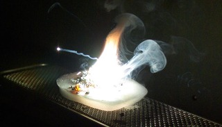
(all photos courtesy Alex Carpenter, Nils Weidemann, The Chemography Project)
A kilo of magnesium burns at over 3,000 degrees Celcius. Hot enough to melt through most materials, the magnesium rests on block of dry ice so that it doesn't melt through the stand which supports it.
Two Phases of Mercury
Like any molten metal, mercury can be poured into molds, cooled and even worked. Here it has been solidified into the shape of a hexagon. Once solidified, mercury is little different from lead or tin. Indeed, on a colder world mercury might just be used to make balls for firearms or figurines for children.
"The Green Lantern"-styled Trimethyl Borate
Fitting of The Green Lantern, trimethyl borate, a clear colorless liquid, produces an intense green flame when burned. Aside from its aesthetic beauty, trimethyl borate is an extremely important chemical feedstock for the production of boronic acids used in well-known palladium coupling.
Spectacular Reactor Core: The Photolizer
Is this some sort of a reactor core of a ship in Star Wars? Interestingly, this photograph shows the inside of a mercury vapor photolysis reactor. Taken at the moment the reactor was powered down, the flickers of light are bits of mercury plasma cooling back to clear, colorless mercury vapor.
Mysterious Tube Furnace
Ever wonder how ceramics are made? In this image, a tube-furnace heated to a 900 degrees Celsius is being utilized to sinter a 1-2-3 superconductor into a ceramic pellet.
Sulphur, Burning Hellish "Blue"

Ancient depictions of hell often talk about fire and burning brimstone (sulfur). When heated, yellow-colored sulfur melts into a blood-red liquid that can be ignited to yield an intense blue flame. Maybe depictions of burning hell should be blue instead of red.
The Heart of a Titanium-Sapphire Laser
(bottom right image credit: LED Professional)
The heart of a titanium-sapphire laser is, you guessed it, a highly-polished synthetic sapphire crystal doped with titanium. This particular laser is used in optical trapping experiments to capture and suspend particles.
Flame Salts, and other secrets of fireworks
Ever wonder how they get different colors in fireworks? Different elements produce different colors when burned. For example: sodium (yellow), potassium (purple), lithium (red), copper (blue) and barium (green). In this series of images, we have mixed a variety of salts and heated them using a propane-oxygen torch to produce a variety of colors.
Sieves, Beads and Fancy Clays
"What are those beads?" -
Often the first question asked when people walk through a synthetic chemistry lab, the beads are molecular sieves. Essentially a “fancy clay”, molecular sieves are zeolite mineral composed of aluminum and silicon. As their name suggests, sieves capture molecules (like water or oxygen) using small pores of uniform size. A lot like "goldilocks", these pores are just the right size to remove water but not organic compounds of interest.
Purple Magic Effects: Iodine
The rich purple color of iodine vapor is unmistakable. Although iodine is a solid at room temperature, it is easily vaporized under gentle heat to produce a beautiful purple gas.
The Royal Water: Mistifying Aqua Regia
Take aqua fortis (HNO3) and mix with muriatic acid (HCl) in a one to three ratio. Wait a few minutes and you have an orange, bubbling tonic known as aqua regia or royal water. When first prepared aqua regia is colorless. Over minutes, the tonic partially decomposes: generating the powerful, red-colored oxidizerdinitrogen tetroxide. As a notable aside, N2O4 is popular component in rocket fuels.
Able to dissolve the so-called “noble metals” like gold, silver, and platinum, this acidic mixture has played a storied role in human history. Alchemists used it to "transmute" gold. De Hevesy used it to hide gold from the Naziʼs. And less glamorously, modern organometallic chemists use it daily to remove metals from glassware; while artists use its potent properties to etch metals.
Right image above shows nitrogen dioxide: anyone living in a big city knows the brown haze that can accumulate. That haze is nitrogen dioxide (NO2). Aside from turning city skies brown, NO2 is one of the most potent greenhouse gases. A major accomplishment of the EPA and emission controls in the 1970ʼs was the introduction of catalytic converters which considerably reduce NO2 emissions.
X-Ray Crystallography
Ever wonder how chemists know what molecules look like? -
Although there are a variety of techniques to identify molecules, the closest a chemist can get to taking a picture of a molecule is x-ray crystallography. Passing ultra-high energy X-rays (enough to necrotize flesh with only seconds of exposure) through a crystal of any compound yields a diffraction pattern. Solving this diffraction pattern, in turn, provides a three-dimensional picture of the molecule of interest.
In the image, the X-ray beam passes from the beam-collimator at bottom left, through a single-crystal (~ 1 mm3 ) and onto a $120,000 CCD detector which captures the diffraction pattern.
(soap bubbles... image credit: Tony L. Wang)
For further daily fix of awesome chemistry photos, please go visit their site and join their Facebook page
CONTINUE TO "JOURNEY INTO MICROWORLD"! ->
READ THE REST OF OUR "AMAZING SCIENCE" CATEGORY ->
|
|
. . . |
|
|
|
|
Tweet |
|
2012-09-21T16:20:00.000-07:00
"Flying Saucer" Soviet Architecture in Caucasus
"Flying Saucer" Soviet Architecture in Caucasus
"QUANTUM SHOT" #797
Link - article by Avi Abrams Spectacular mountains, great fresh air, awesome canyons - and this futuristic slick structure!
Truly "The House on the Borderland"... great for meditation and sitting out the end of the world (if you remember 1908 masterpiece novel by William Hope Hodgson).
Spotted in the North Caucasus mountains, near the resort town of Dombai, this fantastic "flying saucer" house is the prime example of 1970s architecture. Seemingly a knock-off of the "Futuro House" (designed by by Matti Suuronen, Finland), it was built in 1979 as a "Krugozor / Horizon House", or a panoramic lookout for the Mussa-Achitara Mountain close to the town of Karachayevsk in the Karachay-Cherkess Republic, Russia.(image credit: Teberda - Dombai - Arkhyz Soviet Tour Guide, 1982, via)
People line up to see the aliens inside the just-landed "flying saucer"... well, no, they are eager to see the panoramic views of the valley:
Here is how the area looks around the "Krugozor" panoramic house:
Another lookout tower in Georgia (left) and public beach tower in Sochi, both displaying the typical Soviet monumental 1970s style:(images via)
Cable car station in Sochi, seen in 1983:
Georgian Soviet-era architecture can be quite fantastic sometimes... Here is the "Space Arches" structure in Tbilisi, currently demolished, alas:
Seriously weird Ministry of Roadways and Transport building in Tbilisi - and "upside down" figures hanging over a park in Pitsunda, Georgia, seen in 1970:(images via)
Even more amazing is this 1970s seagull-shaped road mark on a mountain road near Yerevan, Armenia:The Fantastic North and Central Caucasus Mountain Area
The beautiful Teberda - Dombai - Arkhyz hiking and skiing area sports plenty of other attractions; here are some of the most interesting.
Look at this great, inspiring poster from the 1930s promoting the "Georgian Military Highway". The road is spectacular indeed, just needs some work to improve its safety:
While exploring these mountain ranges, you might get lucky to spot these extremely rare and protected animals: the last surviving European Bison population -
The area is rich in history and full of great exploring opportunities for enthusiasts of abandoned and ruined places. These are the ruins of the Shoan Temple on the road from Cherkessk to Dombai, dating from around 1,000 AC:
Another ancient Shoan Church can be seen in much better condition, surround by equally spectacular views:(image credit: Vadim Turkin)
The architectural highlights of Dombai and Arkhyz are not limited to hotels and tourist infrastructure. Good old Soviet scientific facilities can impress as well.
Check out this great interior of The Special Astrophysical Observatory (SAO RAS) built in 1966. "Based in the Bolshoi Zelenchuk Valley of the Greater Caucasus near the village of Nizhny Arkhyz, the observatory houses the large BTA-6 optical telescope and RATAN-600 radio telescope".(image via)
Another example of the "brutal modernist" style of old Soviet architecture was spotted in Armenia (this is Mount Ararat in the background):(image via)
And we finish with the truly evocative image of a Russian Stalinist architecture gracing the worker's beaches of Novorossiysk on the Black Sea:(image via)
Certainly beautiful in their own grandiose way, these examples of Soviet-era design are often demolished or left crumbling - so the last record of their existence is preserved in postcards and tourist brochures, by a handful of faithful collectors.READ THE REST OF OUR AMAZING ARCHITECTURE SERIES ->
. . .
Tweet
"QUANTUM SHOT" #797
Link - article by Avi Abrams
Spectacular mountains, great fresh air, awesome canyons - and this futuristic slick structure!
Truly "The House on the Borderland"... great for meditation and sitting out the end of the world (if you remember 1908 masterpiece novel by William Hope Hodgson).
Spotted in the North Caucasus mountains, near the resort town of Dombai, this fantastic "flying saucer" house is the prime example of 1970s architecture. Seemingly a knock-off of the "Futuro House" (designed by by Matti Suuronen, Finland), it was built in 1979 as a "Krugozor / Horizon House", or a panoramic lookout for the Mussa-Achitara Mountain close to the town of Karachayevsk in the Karachay-Cherkess Republic, Russia.
(image credit: Teberda - Dombai - Arkhyz Soviet Tour Guide, 1982, via)
People line up to see the aliens inside the just-landed "flying saucer"... well, no, they are eager to see the panoramic views of the valley:

Here is how the area looks around the "Krugozor" panoramic house:
Another lookout tower in Georgia (left) and public beach tower in Sochi, both displaying the typical Soviet monumental 1970s style:
(images via)
Cable car station in Sochi, seen in 1983:
Georgian Soviet-era architecture can be quite fantastic sometimes... Here is the "Space Arches" structure in Tbilisi, currently demolished, alas:
Seriously weird Ministry of Roadways and Transport building in Tbilisi - and "upside down" figures hanging over a park in Pitsunda, Georgia, seen in 1970:
(images via)
Even more amazing is this 1970s seagull-shaped road mark on a mountain road near Yerevan, Armenia:
The Fantastic North and Central Caucasus Mountain Area
The beautiful Teberda - Dombai - Arkhyz hiking and skiing area sports plenty of other attractions; here are some of the most interesting.
Look at this great, inspiring poster from the 1930s promoting the "Georgian Military Highway". The road is spectacular indeed, just needs some work to improve its safety:
While exploring these mountain ranges, you might get lucky to spot these extremely rare and protected animals: the last surviving European Bison population -
The area is rich in history and full of great exploring opportunities for enthusiasts of abandoned and ruined places. These are the ruins of the Shoan Temple on the road from Cherkessk to Dombai, dating from around 1,000 AC:
Another ancient Shoan Church can be seen in much better condition, surround by equally spectacular views:
(image credit: Vadim Turkin)
The architectural highlights of Dombai and Arkhyz are not limited to hotels and tourist infrastructure. Good old Soviet scientific facilities can impress as well.
Check out this great interior of The Special Astrophysical Observatory (SAO RAS) built in 1966. "Based in the Bolshoi Zelenchuk Valley of the Greater Caucasus near the village of Nizhny Arkhyz, the observatory houses the large BTA-6 optical telescope and RATAN-600 radio telescope".
(image via)
Another example of the "brutal modernist" style of old Soviet architecture was spotted in Armenia (this is Mount Ararat in the background):

(image via)
And we finish with the truly evocative image of a Russian Stalinist architecture gracing the worker's beaches of Novorossiysk on the Black Sea:
(image via)
Certainly beautiful in their own grandiose way, these examples of Soviet-era design are often demolished or left crumbling - so the last record of their existence is preserved in postcards and tourist brochures, by a handful of faithful collectors.
READ THE REST OF OUR AMAZING ARCHITECTURE SERIES ->
|
|
. . . |
|
|
|
|
Tweet |
|
2012-11-15T16:55:00.000-08:00
Attractive, Unique Vintage Telephones
Attractive, Unique Vintage Telephones
"QUANTUM SHOT" #805
Link - article by Simon Rose and Avi Abrams Fabulous Phones – Blasts from the Past! (Go ahead, call your mother)
Chuck Palahniuk once said: "People used what they called a telephone because they hated being close together and they were scared of being alone". Nowadays the same sentiment could be applied to Facebook and other social websites (in a tongue-in-cheek manner, of course). However, if you are going to make a call from a home line (those of you who still have it), you might as well do it in style: (Ericofon telephones from Ericsson, 1961 - images via)
Some of these vintage cool-looking phones are perfectly styled to call your grandmother... It is not the intention of this article to cover every single unusual or interesting antique telephone available to view online, but hopefully you’ll enjoy taking a look at a few of these wonderful retro examples here at Dark Roasted Blend.
We'll start with a Timeless classic: Black 332 Bakelite Telephone from the 1950s England... First introduced in the UK in 1932, the 332 Bakelite telephone remained in production until 1959 (gaining in popularity after the advent of "Matrix" movies):(image credit: AntiquePhones)
This is the classic British Bakelite Telephone, the first of their kind to be used in the UK. These 200 series telephones were mostly made in the 1940s, however the GPO, the suppliers of all phones in the UK back in those days, supplied them between 1929 and 1957. Most telephones were black, but could you could occasionally get ivory ones, although red and green versions were very rare.
The most popular British Bakelite telephones were the 300 series, the first UK Bakelite phones with an internal bell. This colour was very rarely seen, however:(image credit: AntiquePhones)
This trimphone looks like it dates from the seventies, although phones like this first appeared in the mid sixties:(images via 1, 2)
This type of candlestick telephone was common from around 1900 until the early thirties:(images via 1, 2, 3)
This rare Queen Elizabeth II Silver Jubilee phone was manufactured in 1977:(image credit: The Old Telephone)
This one was probably a clear favourite with some people:(image credit: AntiquePhones)"Telephone, n. An invention of the devil which abrogates some of the advantages of making a disagreeable person keep his distance." -- Ambrose Bierce
Here is a pretty attractive designer line from the Western Electric, around 1974 (see the whole lineup here):(images via Porticus)
These days, we often get offered free cell phones in exchange for signing up for contracts. Back in 1983 the first ever handheld mobile phone was introduced and the Motorola DynaTAC 8000X was priced at an incredible $3,995. Amazing how far technology has advanced and how much cheaper mobile phones are now in comparison:(image via)
It looked like a brick, so is it any wonder that a LEGO brick version was eventually made? (significantly cheaper than the original $4000 version) -(image credit: Bruce Lowell)
How about this Ericofon telephone from Ericsson in Sweden dating from 1961? -(image credit: Gerson Lessa)
The Grillo Telephone from 1966 was apparently the first flip-flop phone (Designed by Marco Zanuso and Richard Sapper in 1964/66 for Societa Italiana Telecomunicazioni Auso - Siemens):(image credit: Gerson Lessa)
The Starlite telephone shown here was manufactured in Brazil in 1978, but is based on American designs from the mid sixties:(images credit: Gerson Lessa, 2)
On the right image above you see one of the older car phones: the RF-4900 series, made by the Harris Corporation.
This very odd looking model is a Webcor ZIP Jumbo Button Telephone, from Hong Kong in the 1980s:(image credit: Gerson Lessa)
This 1967 French office telephone had three lines and could operate twelve extensions and even had an extra receiver (it was used by secretaries or personal assistants):(image credit: Jeffery Abdullah-Whyte)
Here’s another Ericofon, this time from 1963 (left image below):(image credit: Jeffery Abdullah-Whyte, Retro on 8th)
Right image above: The Genie was an American Telephone Corp design commonly seen from the late 1960s to early 1980s. It has a touch tone dial manufactured in the same style as the old rotary phones.
The glass attachment on the mouthpiece of this 1904 telephone was designed to prevent the spread of disease (left image below). Shown on the right, this desk phone dates from 1927:(images credit: Imprint)
This 1938 model became renowned as the Lucy Phone after it was used extensively on the TV show ‘I Love Lucy’ (right image). The one on the left (used in the forties, fifties and sixties) was commonly referred to as an exterior use telephone:(images credit: Imprint)
Some pretty cute and colorful exterior vintage phones were seen on display in Tokyo:(image credit: Shinsuke ODA)
This cool retro-styled telephone is also sold in Japan (buy it here):(image via)
The Telstar phone from the seventies and eighties was offered with either a traditional dial or as a pushbutton version:(images credit: Imprint)
This unusual looking telephone was used underground in mines, complete with insulation to prevent sparks from igniting natural gas:(images credit: Imprint)
And the, of course, there are sheep sculptures made out of rotary phones... Why? Well, no one should really ask this question when it concerns art. These are Jean-Luc Cornec’s Sheep Sculptures from the Museum of Telecommunication in Frankfurt:(image via)CONTINUE TO "SOVIET COLD WAR PHONES"! ->Also Read: "Weirdest Cell Phones Ever" ->Check out the rest of our popular "VINTAGE" category ->
. . .
Tweet
"QUANTUM SHOT" #805
Link - article by Simon Rose and Avi Abrams
Fabulous Phones – Blasts from the Past! (Go ahead, call your mother)
Chuck Palahniuk once said: "People used what they called a telephone because they hated being close together and they were scared of being alone". Nowadays the same sentiment could be applied to Facebook and other social websites (in a tongue-in-cheek manner, of course). However, if you are going to make a call from a home line (those of you who still have it), you might as well do it in style:
(Ericofon telephones from Ericsson, 1961 - images via)
Some of these vintage cool-looking phones are perfectly styled to call your grandmother... It is not the intention of this article to cover every single unusual or interesting antique telephone available to view online, but hopefully you’ll enjoy taking a look at a few of these wonderful retro examples here at Dark Roasted Blend.
We'll start with a Timeless classic: Black 332 Bakelite Telephone from the 1950s England... First introduced in the UK in 1932, the 332 Bakelite telephone remained in production until 1959 (gaining in popularity after the advent of "Matrix" movies):
(image credit: AntiquePhones)
This is the classic British Bakelite Telephone, the first of their kind to be used in the UK. These 200 series telephones were mostly made in the 1940s, however the GPO, the suppliers of all phones in the UK back in those days, supplied them between 1929 and 1957. Most telephones were black, but could you could occasionally get ivory ones, although red and green versions were very rare.
The most popular British Bakelite telephones were the 300 series, the first UK Bakelite phones with an internal bell. This colour was very rarely seen, however:
(image credit: AntiquePhones)
This trimphone looks like it dates from the seventies, although phones like this first appeared in the mid sixties:
(images via 1, 2)
This type of candlestick telephone was common from around 1900 until the early thirties:
(images via 1, 2, 3)
This rare Queen Elizabeth II Silver Jubilee phone was manufactured in 1977:
(image credit: The Old Telephone)
This one was probably a clear favourite with some people:
(image credit: AntiquePhones)
"Telephone, n. An invention of the devil which abrogates some of the advantages of making a disagreeable person keep his distance." -- Ambrose Bierce
Here is a pretty attractive designer line from the Western Electric, around 1974 (see the whole lineup here):
(images via Porticus)
These days, we often get offered free cell phones in exchange for signing up for contracts. Back in 1983 the first ever handheld mobile phone was introduced and the Motorola DynaTAC 8000X was priced at an incredible $3,995. Amazing how far technology has advanced and how much cheaper mobile phones are now in comparison:
(image via)
It looked like a brick, so is it any wonder that a LEGO brick version was eventually made? (significantly cheaper than the original $4000 version) -
(image credit: Bruce Lowell)
How about this Ericofon telephone from Ericsson in Sweden dating from 1961? -
(image credit: Gerson Lessa)
The Grillo Telephone from 1966 was apparently the first flip-flop phone (Designed by Marco Zanuso and Richard Sapper in 1964/66 for Societa Italiana Telecomunicazioni Auso - Siemens):
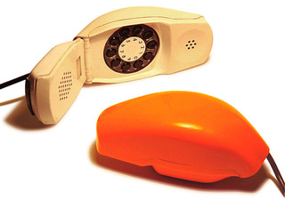
(image credit: Gerson Lessa)
The Starlite telephone shown here was manufactured in Brazil in 1978, but is based on American designs from the mid sixties:
(images credit: Gerson Lessa, 2)
On the right image above you see one of the older car phones: the RF-4900 series, made by the Harris Corporation.
This very odd looking model is a Webcor ZIP Jumbo Button Telephone, from Hong Kong in the 1980s:
(image credit: Gerson Lessa)
This 1967 French office telephone had three lines and could operate twelve extensions and even had an extra receiver (it was used by secretaries or personal assistants):
(image credit: Jeffery Abdullah-Whyte)
Here’s another Ericofon, this time from 1963 (left image below):
(image credit: Jeffery Abdullah-Whyte, Retro on 8th)
Right image above: The Genie was an American Telephone Corp design commonly seen from the late 1960s to early 1980s. It has a touch tone dial manufactured in the same style as the old rotary phones.
The glass attachment on the mouthpiece of this 1904 telephone was designed to prevent the spread of disease (left image below). Shown on the right, this desk phone dates from 1927:
(images credit: Imprint)
This 1938 model became renowned as the Lucy Phone after it was used extensively on the TV show ‘I Love Lucy’ (right image). The one on the left (used in the forties, fifties and sixties) was commonly referred to as an exterior use telephone:
(images credit: Imprint)
Some pretty cute and colorful exterior vintage phones were seen on display in Tokyo:
(image credit: Shinsuke ODA)
This cool retro-styled telephone is also sold in Japan (buy it here):
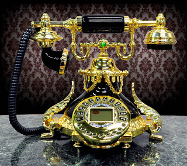
(image via)
The Telstar phone from the seventies and eighties was offered with either a traditional dial or as a pushbutton version:
(images credit: Imprint)
This unusual looking telephone was used underground in mines, complete with insulation to prevent sparks from igniting natural gas:
(images credit: Imprint)
And the, of course, there are sheep sculptures made out of rotary phones... Why? Well, no one should really ask this question when it concerns art. These are Jean-Luc Cornec’s Sheep Sculptures from the Museum of Telecommunication in Frankfurt:
(image via)
CONTINUE TO "SOVIET COLD WAR PHONES"! ->
Also Read: "Weirdest Cell Phones Ever" ->
Check out the rest of our popular "VINTAGE" category ->
|
|
. . . |
|
|
|
|
Tweet |
|
2012-11-08T18:31:00.001-08:00
Archive: October 2012
Archive: October 2012
Huge Off-Highway Road TrainsAll set to conquer the Moon, Mars (almost!)
Crazy Logistics: People Trying to Do Things (Funny Pics)Incredible Feats of Strength and Imagination!
Unusual and Fascinating Coins & Currency, Part 2Coins with pieces of the Moon in them!
Monstrous, Angelic, Unusual Bridge SculpturesGriffins, trolls, hamsters of all sorts
"Tatra" Car & Other Aerodynamic Marvels, Part 2Futuristic Shape and Radical Design in the 1930s-1950s
The Tatra T87: Streamlined, Fast and Mostly UnknownDesigned to resemble German airships
October 30, 2012 - Biscotti BitsMixed Links & ImagesIncl. "Concerto of Facial Expressions"
October 15, 2012 - Biscotti BitsMixed Links & ImagesIncl. "Why Is It Dark at Night?"
Check out previous Biscotti & Feel-Good issues! - Click Here
Link Latte #190 - Click Here
Link Latte #191 - Click Here
Check out previous Link Latte issues! - Click HereCONTINUE READING! - NEXT PAGE ->Continue on to other monthly archives:
September 2012
August 2012
July 2012
June 2012
May 2012
April 2012
March 2012
February 2012
Dec-Jan 2012
November 2011
October 2011
September 2011
August 2011
July 2011
June 2011
May 2011
April 2011
March 2011
February 2011
January 2011
December 2010
November 2010
October 2010
September 2010
August 2010
July 2010
June 2010
May 2010
April 2010
March 2010
Winter 2009-2010
Oct-Nov 2009
September 2009
August 2009
June-July 2009
May 2009
April 2009
March 2009
February 2009
January 2009
December 2008
November 2008
October 2008
September 2008
August 2008
July 2008
June 2008
May 2008
April 2008
March 2008
February 2008
January 2008
December 2007
November 2007
October 2007
September 2007
August 2007
July 2007
June 2007
May 2007
April 2007
March 2007
February 2007
January 2007
December 2006
November 2006
October 2006
Link Lattes

|
Huge Off-Highway Road Trains
All set to conquer the Moon, Mars (almost!)
|
 |
Crazy Logistics: People Trying to Do Things (Funny Pics)
Incredible Feats of Strength and Imagination!
|
|
Unusual and Fascinating Coins & Currency, Part 2
Coins with pieces of the Moon in them!
|
 |
Monstrous, Angelic, Unusual Bridge Sculptures
Griffins, trolls, hamsters of all sorts
|
|
"Tatra" Car & Other Aerodynamic Marvels, Part 2
Futuristic Shape and Radical Design in the 1930s-1950s
|
|
The Tatra T87: Streamlined, Fast and Mostly Unknown
Designed to resemble German airships
|
| 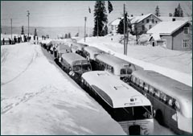 |
October 30, 2012 - Biscotti Bits
Mixed Links & Images
Incl. "Concerto of Facial Expressions"
|
|
October 15, 2012 - Biscotti Bits
Mixed Links & Images
Incl. "Why Is It Dark at Night?"
|
Check out previous Biscotti & Feel-Good issues! - Click Here
Link Latte #190 - Click Here
Link Latte #191 - Click Here
Check out previous Link Latte issues! - Click Here
CONTINUE READING! - NEXT PAGE ->Continue on to other monthly archives:
September 2012
August 2012
July 2012
June 2012
May 2012
April 2012
March 2012
February 2012
Dec-Jan 2012
November 2011
October 2011
September 2011
August 2011
July 2011
June 2011
May 2011
April 2011
March 2011
February 2011
January 2011
December 2010
November 2010
October 2010
September 2010
August 2010
July 2010
June 2010
May 2010
April 2010
March 2010
Winter 2009-2010
Oct-Nov 2009
September 2009
August 2009
June-July 2009
May 2009
April 2009
March 2009
February 2009
January 2009
December 2008
November 2008
October 2008
September 2008
August 2008
July 2008
June 2008
May 2008
April 2008
March 2008
February 2008
January 2008
December 2007
November 2007
October 2007
September 2007
August 2007
July 2007
June 2007
May 2007
April 2007
March 2007
February 2007
January 2007
December 2006
November 2006
October 2006
Link Lattes
2012-11-05T22:37:00.000-08:00
Concerto of Facial Expressions
Concerto of Facial Expressions
Link
Scroll down for today's pictures & links.Concerto of Facial Expressions
Paganini's violin concert performed with facial expressions! Does this guy has the most expressive face ever, or what? -
Link
Today's pictures & links:Pennsylvania Station (New York City), circa 1910
One of the most inspiring architectural masterpieces, Pennsylvania Station was demolished in 1963 to make way for equally unforgettable (in its ugly, brutal, featureless modernism form) Penn Plaza / Madison Square Garden complex. Such an act of vandalism and sheer cultural atrocity was decried internationally and led to preservation of Grand Central Terminal, which faced the similar fate - but thankfully was saved. Read more here.(image via Shorpy)
See the full version here: simply spectacular!
------------One of the Most Beautiful Scenes We've Ever Seen
This is Detian Falls in Guangxi Province of China:(image via)
------------1951 Daithatsu Bee... Remember these?
Cute, but short on one front wheel -(image via)
------------
Mixed fresh links for today:
Huge Impact Crater on the Dark Side of the Moon - [biggest in the Solar System]
Ingenious Hexapod Robot - [wow video, geek tech]
High-Res Self-Portrait of Curiosity Rover - [NASA site]
Miss NASA Beauty Pageants, 1968-1973 - [vintage, NASA]
Before & After Photos of Sandy's Desolation - [pics]
Abandoned Island Fortress in Florida - [abandoned]
Phil's Old Radio Gallery - [vintage, cool site]
Welcome to a Voice-Activated Elevator!, more - [funny prank videos]
More Elevator Fun: "Eleven!" - [fun video]
Bridge to Nowhere - [video, wait for it]
Perhaps the Weirdest Vehicle Ever - [wow video]
Loosing Your Head: Creepiest Prank - [wow video]
Two Epic Car Chases Mashed Into One - [wow video]
Most Notorious Con Men & Crimes - [neat info]
Another Cool Photoshop Disasters Roundup - [funny pics]
------------ A Trilobite Fossil, Revelead Within a Rock:
If you have not seen this image yet, here it is, courtesy Alex Treadway Photography. Check out the video on how to do this... and a wonderful educational film about trilobites.(image credit: Alex Treadway)
Here is another example, in this case Trilobite Comura:(image via)
------------Flight deck of Boeing 747-8, one of the biggest airplanes in existence(image via)
See our incredible colleciton of amazing dashboards in Part 1 and Part 2 of a "Mega Dashboards" series.
------------Real-Life Steampunk / Dieselpunk Photo: "To STATION and STREET"
The exposed girders in the ceiling over platform 1 of Newark Pennsylvania Station, photographed by Pete Castro:(image credit: Pete Castro)
------------
The following is a short round-up of the best from our Facebook stream (which we update every day with unique material, not available on DRB otherwise):
Great shot of 1952 Michigan Avenue Bridge, Chicago:(image credit: "Holiday Magazine", October 1951, via)
Here is a very touching photo... Marine Sergeant Frank Praytor feeds a two-week old Korean kitten, Korea, ca 1953. See more "Cats in the Sea Services" here:(image via)
There are plenty of ways to tie your shoelaces... educate yourself from this chart, and show that you are a true hipster! -(original unknown)
------------Impressive Wall of Snow
Titled "The Skiing Horde", this 1952 photograph was taken in Honefoss, Norway. Certainly looks like they had a fabulous skiing time! Photo by Rodsten-Knutsen.(image via Paul Malon)
------------The "Ball Rider", by Wolfram Design
How would you like to roll down the hill on this contraption? Conceived by Wolfram Design from Germany, this vehicle is light-weight, very agile and apparently very easy to make. Hop on, and roll on! Read more at their site; and also see this "roller" in action in these videos.(images credit: Wolfram Design)
------------"Unconquered Castle": Epic Fantasy's One of the Most Romantic Landscapes
This dream-like vision is by AnnDr from Simferopol, Ukraine:(image credit: AnnDr)
See more beautiful, romantic examples of her fantasy art here and here.
------------"Gentlemen Prefer Vespas!"
You bet. Five gents at a time.(image credit: Playboy Magazine, 1959, via)
------------Amedeo: The Exclusive Clothiers for Men
Speaking of gentlemen and classy way to dress, here is a neat online store where you can get very nifty shirts, neck tie sets and great accessories, like attractive metal business card holders - Amedeo Exclusive. We've been given some very swanky samples to put on - they all certainly look great, plus there is quite a variety of styles to choose from:
------------Help is on the way!(original unknown)
Diner's Club... for the doggies:READ THE PREVIOUS ISSUE ->READ ALL BISCOTTI ISSUES HERE ->Make sure to check our daily updates on Facebook!
. . .
TweetFollow @DRBlend
Link
Scroll down for today's pictures & links.
Concerto of Facial Expressions
Paganini's violin concert performed with facial expressions! Does this guy has the most expressive face ever, or what? -
Link
Today's pictures & links:
Pennsylvania Station (New York City), circa 1910
One of the most inspiring architectural masterpieces, Pennsylvania Station was demolished in 1963 to make way for equally unforgettable (in its ugly, brutal, featureless modernism form) Penn Plaza / Madison Square Garden complex. Such an act of vandalism and sheer cultural atrocity was decried internationally and led to preservation of Grand Central Terminal, which faced the similar fate - but thankfully was saved. Read more here.
(image via Shorpy)
See the full version here: simply spectacular!
------------
One of the Most Beautiful Scenes We've Ever Seen
This is Detian Falls in Guangxi Province of China:
(image via)
------------
1951 Daithatsu Bee... Remember these?
Cute, but short on one front wheel -
(image via)
------------
Mixed fresh links for today:
Huge Impact Crater on the Dark Side of the Moon - [biggest in the Solar System]
Ingenious Hexapod Robot - [wow video, geek tech]
High-Res Self-Portrait of Curiosity Rover - [NASA site]
Miss NASA Beauty Pageants, 1968-1973 - [vintage, NASA]
Before & After Photos of Sandy's Desolation - [pics]
Abandoned Island Fortress in Florida - [abandoned]
Phil's Old Radio Gallery - [vintage, cool site]
Welcome to a Voice-Activated Elevator!, more - [funny prank videos]
More Elevator Fun: "Eleven!" - [fun video]
Bridge to Nowhere - [video, wait for it]
Perhaps the Weirdest Vehicle Ever - [wow video]
Loosing Your Head: Creepiest Prank - [wow video]
Two Epic Car Chases Mashed Into One - [wow video]
Most Notorious Con Men & Crimes - [neat info]
Another Cool Photoshop Disasters Roundup - [funny pics]
------------
A Trilobite Fossil, Revelead Within a Rock:
If you have not seen this image yet, here it is, courtesy Alex Treadway Photography. Check out the video on how to do this... and a wonderful educational film about trilobites.
(image credit: Alex Treadway)
Here is another example, in this case Trilobite Comura:
(image via)
------------
Flight deck of Boeing 747-8, one of the biggest airplanes in existence
(image via)
See our incredible colleciton of amazing dashboards in Part 1 and Part 2 of a "Mega Dashboards" series.
------------
Real-Life Steampunk / Dieselpunk Photo: "To STATION and STREET"
The exposed girders in the ceiling over platform 1 of Newark Pennsylvania Station, photographed by Pete Castro:
(image credit: Pete Castro)
------------
The following is a short round-up of the best from our Facebook stream (which we update every day with unique material, not available on DRB otherwise):
Great shot of 1952 Michigan Avenue Bridge, Chicago:
(image credit: "Holiday Magazine", October 1951, via)
Here is a very touching photo... Marine Sergeant Frank Praytor feeds a two-week old Korean kitten, Korea, ca 1953. See more "Cats in the Sea Services" here:
(image via)
There are plenty of ways to tie your shoelaces... educate yourself from this chart, and show that you are a true hipster! -
(original unknown)
------------
Impressive Wall of Snow
Titled "The Skiing Horde", this 1952 photograph was taken in Honefoss, Norway. Certainly looks like they had a fabulous skiing time! Photo by Rodsten-Knutsen.
(image via Paul Malon)
------------
The "Ball Rider", by Wolfram Design
How would you like to roll down the hill on this contraption? Conceived by Wolfram Design from Germany, this vehicle is light-weight, very agile and apparently very easy to make. Hop on, and roll on! Read more at their site; and also see this "roller" in action in these videos.
(images credit: Wolfram Design)
------------
"Unconquered Castle": Epic Fantasy's One of the Most Romantic Landscapes
This dream-like vision is by AnnDr from Simferopol, Ukraine:
(image credit: AnnDr)
See more beautiful, romantic examples of her fantasy art here and here.
------------
"Gentlemen Prefer Vespas!"
You bet. Five gents at a time.

(image credit: Playboy Magazine, 1959, via)
------------
Amedeo: The Exclusive Clothiers for Men
Speaking of gentlemen and classy way to dress, here is a neat online store where you can get very nifty shirts, neck tie sets and great accessories, like attractive metal business card holders - Amedeo Exclusive. We've been given some very swanky samples to put on - they all certainly look great, plus there is quite a variety of styles to choose from:
------------
Help is on the way!
(original unknown)
Diner's Club... for the doggies:

READ THE PREVIOUS ISSUE ->
READ ALL BISCOTTI ISSUES HERE ->
Make sure to check our daily updates on Facebook!
|
|
. . . |
|
|
|
|
TweetFollow @DRBlend |
|
2012-10-28T13:42:00.002-07:00
Crazy Logistics: People Trying to Do Things (Funny Pics)
Crazy Logistics: People Trying to Do Things (Funny Pics)
"QUANTUM SHOT" #803
Link - article by Avi Abrams Incredible Feats of Strength and Imagination, Part 13
Today you are going to see some "head scratchers", befuddling pics that will make you wonder what exactly these guys were thinking? You may also ask what was the result of these endeavors, and did these people finally get things done? Well, sadly, photographs are not videos and the outcome of these incredible feats of strength and imagination are unknown. We really hope they made it... See the rest of our "Crazy Logistics" series here.
When snow comes to Winnipeg, Canada:(original unknown)
Got a used bed frame? Make a bike! -(originals unknown)
DIY car air conditioner! -
Taking a bath in India:
Taking a bath, redneck-style:(original unknown)
"Make Your Own Bike!" -
"Make Your Own Helicopter!" -
This wonderful hybrid hammock boat was spotted at the University of California at Davis:(image credit: Tobin, via)
... And another one, less fancy:
Coolest DJ outfit ever -In the Kitchen(images via)
Great way to remove a stubborn cork:(image via)
DIY Mixer! -(image via)
Not safe, but "good enough":Geeky household ideas(originals unknown)
Defrosting your fridge.... mowing your lawn... -
For those of you who needs to secure your stash, here is an idea! - and instructions how to make it:(image via)
Various ways to use computer side trays:
When you have nothing else to do -
When you have too many empty beer cans:(original unknown)
Adding an extra room to your house:
A primitive mousetrap! -
... and a trap for thieves? Nope, a "Hipster Trap"! This is a piece of street art in New York, by Hunter Fine and Jeff Greenspan - more info:(image via)
Secure your remote (so that it would not get away) -
Need to hang your key? Just make sure that this outlet has no power:
"Wife packed me a lunch for work but forgot a fork... so I had to improvise":(image via)
Doing it right, and doing it wrong:(top image via)Crazy Loads (did they reach their destination?)
A truck crosses the Grand Erg (the Dune Sea) overloaded with migrant workers from Libya. Photo taken in Sahelzone, Niger, Eastern region. They need to cross 2500 kilometers, which lasts 20 days! With 13-hour stretches per day, with stop for the night. During the day these passengers have to face 45 degrees Celsius heat and freeze at temperatures below zero during the night...(image via Waco Hale)
These are normal means of transporting goods in Burkina Faso, Africa. They have special hats made for this:(image credit: Eleonora)
We had a separate installment in the series, Overloaded!, dealing with all sorts of unsafe loads on cars, bicycles and tractors. Here is a bit of an update. This arm was seen in Russia -(originals unknown)
French photographer Alain Delorme has a series about various overload situations in China - see the whole gallery here (warning: some are Photoshopped) -(image credit: Alain Delorme)
Super Stacker! -
Another prize for super-stacking:(image via)
Taming a wild truck in Pakistan:(image credit: "Kashmir Motor News" via)
And another wild ride, seen in Lagos, Nigeria! - "Yeee-haaa!"(image credit: Malfark Pous)
"Yeeeeeee!" -
Camels are often overloaded, too -(image via)
When you do not have a horse, or a camel -
Pimp up your ride! -
Russian commute overloading:
Transporting a cow! -
Here is how you transport a cow in your side car - with the bottom of the sidecar removed:(images credit: Elly Gaverink, via)
And here is a cow family is going for a ride:(image found in newspaper, via John Dreuning)
Tractors are still good for many things:
Sleeping on trains is a national pastime - seen at Dakka Bangladesh train:(image credit: Jonas Bendiksen, National Geographic)
Not every "Crazy Logistics" pic comes from a third world country, here is one spotted by Tim Buerger in Tokyo, Japan - right in the middle of the classy Shinjuku area:(image credit: Tim Buerger)
Here is a "helping hand" at Shinjuku railway station. "This is what I call customer service!" -(image credit: Johnny Vandergaz)Seriously Unsafe Construction
Work disasters waiting to happen:
Here is a close-up on this guy from the last image above:
He seems to know what he's doing... These guys, on the other hand -
Well, this would seem like an "obvious" idea:
They should make a (comedy?) movie about fixing air conditioners in some countries:
Clipping your nails has never been easier:
And of course, this image is a "winner" (if you did not see it yet). See a lot more scaffolding diasters waiting to happen on this page:(image credit: Reuters, via)
Some extremely stupid "fun" activities:
Letting your cat out for a walk:
DIY kid's slide:
And finally, a classic playground construction fail:
See a lot more of failed "Nightmare Playgrounds" in our popular Architectural Horrors Series.CHECK OUT THE REST OF "NEVER GIVE UP!" SERIES ->CONTINUE TO OUR "FUNNY PICS" CATEGORY! ->
. . .
Tweet
"QUANTUM SHOT" #803
Link - article by Avi Abrams
Incredible Feats of Strength and Imagination, Part 13
Today you are going to see some "head scratchers", befuddling pics that will make you wonder what exactly these guys were thinking? You may also ask what was the result of these endeavors, and did these people finally get things done? Well, sadly, photographs are not videos and the outcome of these incredible feats of strength and imagination are unknown. We really hope they made it... See the rest of our "Crazy Logistics" series here.
When snow comes to Winnipeg, Canada:
(original unknown)
Got a used bed frame? Make a bike! -
(originals unknown)
DIY car air conditioner! -
Taking a bath in India:
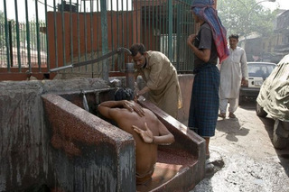
Taking a bath, redneck-style:
(original unknown)
"Make Your Own Bike!" -
"Make Your Own Helicopter!" -
This wonderful hybrid hammock boat was spotted at the University of California at Davis:
(image credit: Tobin, via)
... And another one, less fancy:
Coolest DJ outfit ever -
In the Kitchen
(images via)
Great way to remove a stubborn cork:
(image via)
DIY Mixer! -
(image via)
Not safe, but "good enough":
Geeky household ideas
(originals unknown)
Defrosting your fridge.... mowing your lawn... -
For those of you who needs to secure your stash, here is an idea! - and instructions how to make it:
(image via)
Various ways to use computer side trays:
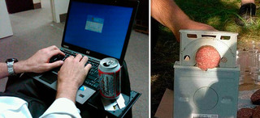
When you have nothing else to do -
When you have too many empty beer cans:
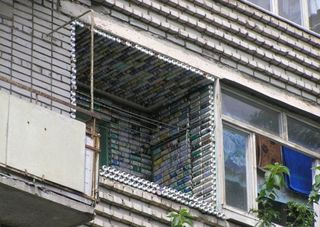
(original unknown)
Adding an extra room to your house:
A primitive mousetrap! -
... and a trap for thieves? Nope, a "Hipster Trap"! This is a piece of street art in New York, by Hunter Fine and Jeff Greenspan - more info:
(image via)
Secure your remote (so that it would not get away) -
Need to hang your key? Just make sure that this outlet has no power:
"Wife packed me a lunch for work but forgot a fork... so I had to improvise":
(image via)
Doing it right, and doing it wrong:
(top image via)
Crazy Loads (did they reach their destination?)
A truck crosses the Grand Erg (the Dune Sea) overloaded with migrant workers from Libya. Photo taken in Sahelzone, Niger, Eastern region. They need to cross 2500 kilometers, which lasts 20 days! With 13-hour stretches per day, with stop for the night. During the day these passengers have to face 45 degrees Celsius heat and freeze at temperatures below zero during the night...
(image via Waco Hale)
These are normal means of transporting goods in Burkina Faso, Africa. They have special hats made for this:
(image credit: Eleonora)
We had a separate installment in the series, Overloaded!, dealing with all sorts of unsafe loads on cars, bicycles and tractors. Here is a bit of an update. This arm was seen in Russia -

(originals unknown)
French photographer Alain Delorme has a series about various overload situations in China - see the whole gallery here (warning: some are Photoshopped) -
(image credit: Alain Delorme)
Super Stacker! -
Another prize for super-stacking:
(image via)
Taming a wild truck in Pakistan:
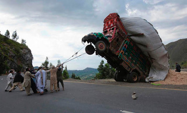
(image credit: "Kashmir Motor News" via)
And another wild ride, seen in Lagos, Nigeria! - "Yeee-haaa!"
(image credit: Malfark Pous)
"Yeeeeeee!" -
Camels are often overloaded, too -
(image via)
When you do not have a horse, or a camel -

Pimp up your ride! -

Russian commute overloading:
Transporting a cow! -
Here is how you transport a cow in your side car - with the bottom of the sidecar removed:
(images credit: Elly Gaverink, via)
And here is a cow family is going for a ride:
(image found in newspaper, via John Dreuning)
Tractors are still good for many things:
Sleeping on trains is a national pastime - seen at Dakka Bangladesh train:

(image credit: Jonas Bendiksen, National Geographic)
Not every "Crazy Logistics" pic comes from a third world country, here is one spotted by Tim Buerger in Tokyo, Japan - right in the middle of the classy Shinjuku area:
(image credit: Tim Buerger)
Here is a "helping hand" at Shinjuku railway station. "This is what I call customer service!" -
(image credit: Johnny Vandergaz)
Seriously Unsafe Construction
Work disasters waiting to happen:
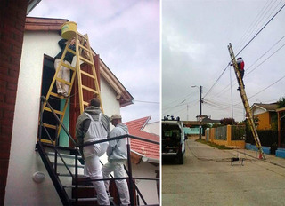
Here is a close-up on this guy from the last image above:
He seems to know what he's doing... These guys, on the other hand -
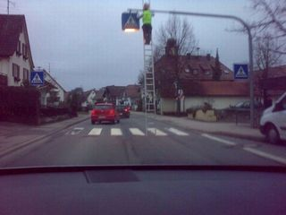
Well, this would seem like an "obvious" idea:
They should make a (comedy?) movie about fixing air conditioners in some countries:
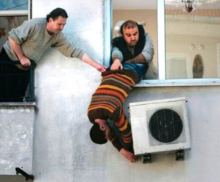

Clipping your nails has never been easier:
And of course, this image is a "winner" (if you did not see it yet). See a lot more scaffolding diasters waiting to happen on this page:
(image credit: Reuters, via)
Some extremely stupid "fun" activities:
Letting your cat out for a walk:
DIY kid's slide:
And finally, a classic playground construction fail:
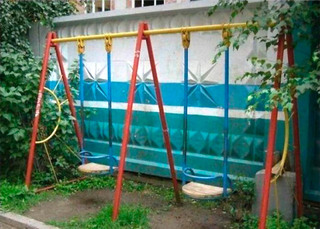
See a lot more of failed "Nightmare Playgrounds" in our popular Architectural Horrors Series.
CHECK OUT THE REST OF "NEVER GIVE UP!" SERIES ->
CONTINUE TO OUR "FUNNY PICS" CATEGORY! ->
|
|
. . . |
|
|
|
|
Tweet |
|
2012-10-20T17:03:00.001-07:00
Link Latte 190
Link Latte 190
#190 - Week of October 19, 2012
Yuri Gagarin on BBC TV, July 11 1961 - [very cool interview]
The Closest The World Has Come to Nuclear War - [Cold War]
Seven-hour Nuclear War Plan - [history, transl.]
Doomsday Clock: Five Minutes to Midnight- [fascinating]
Modern Gyrocar: C-1 self-balancing electric motorcycle - [concept, video]
Inscription on the Statue of Liberty - [interesting]
A robot that searches for faces in clouds - [geek tech]
Stunning: Church Conversion into a Residence - [architecture]
Building a Huge Wooden Boat: DIY Project - [impressive]
Secrets of the "Aerodynamic" Penguins - [wow nature]
Incredible Surreal Photography by Gilbert Garcin, more - [art]
Gullwing America: Porsche 904 Carrera REDONE - [wow car]
Interview with Markus Kayser: "Direct Solar Application" Project - [wow art]
Huge Car Hood Ornaments Collection - [vintage]
Evil Corporation in Your Fridge: Mutant Corn - [shocking?]
Huge Inflatable Bridge to be Built in Paris - [architecture]
Napping Semis - [great pic from Reddit]
Trypophobia: A Fear of Holes! - [info, weird]
Very Touching Posters from World War Two - [vintage]
The Hypnotic Predator - [wow video]
Yet more of outrageous "road rage" - [wow video]
Parking Your Bike Like a Boss - [wow video]
When Russian Big Boys Go to Playground - [wow video]
These two guys would never get the ball - [wow video]
This Happens All the Time! - Explanation - [fun gif, info]
Riding His Bike on... Just About Anything - [wow video]
Unlock the 007 in You: Awesome Stunt - [wow video]
Why You Should Read Your Next Statement - [infographic]
Interesting Origins of Favorite Drinks - [cool info]SEE ALL OTHER LINK LATTE ISSUES HERE
#190 -
Week of October 19, 2012
Yuri Gagarin on BBC TV, July 11 1961 -
[very cool interview]
The Closest The World Has Come to Nuclear War -
[Cold War]
Seven-hour Nuclear War Plan -
[history, transl.]
Doomsday Clock: Five Minutes to Midnight-
[fascinating]
Modern Gyrocar: C-1 self-balancing electric motorcycle -
[concept, video]
Inscription on the Statue of Liberty -
[interesting]
A robot that searches for faces in clouds -
[geek tech]
Stunning: Church Conversion into a Residence -
[architecture]
Building a Huge Wooden Boat: DIY Project -
[impressive]
Secrets of the "Aerodynamic" Penguins -
[wow nature]
Incredible Surreal Photography by Gilbert Garcin, more -
[art]
Gullwing America: Porsche 904 Carrera REDONE -
[wow car]
Interview with Markus Kayser: "Direct Solar Application" Project -
[wow art]
Huge Car Hood Ornaments Collection -
[vintage]
Evil Corporation in Your Fridge: Mutant Corn -
[shocking?]
Huge Inflatable Bridge to be Built in Paris -
[architecture]
Napping Semis -
[great pic from Reddit]
Trypophobia: A Fear of Holes! -
[info, weird]
Very Touching Posters from World War Two -
[vintage]
The Hypnotic Predator -
[wow video]
Yet more of outrageous "road rage" -
[wow video]
Parking Your Bike Like a Boss -
[wow video]
When Russian Big Boys Go to Playground -
[wow video]
These two guys would never get the ball -
[wow video]
This Happens All the Time! - Explanation -
[fun gif, info]
Riding His Bike on... Just About Anything -
[wow video]
Unlock the 007 in You: Awesome Stunt -
[wow video]
Why You Should Read Your Next Statement -
[infographic]
Interesting Origins of Favorite Drinks -
[cool info]SEE ALL OTHER LINK LATTE ISSUES HERE
2012-10-15T14:16:00.000-07:00
Monstrous, Angelic, Unusual Bridge Sculptures
Monstrous, Angelic, Unusual Bridge Sculptures
"QUANTUM SHOT" #801
Link - article by Simon Rose and Avi Abrams Monstrous, Angelic or Just Plain Weird - Unusual Bridge Sculptures, Part One
There are bridges in every country, all over the world, each one serving a very functional purpose, so it's nice to know that some of the planet’s bridges at least have that little bit extra to make them stand out. Here at Dark Roasted Blend, we take our first look at some of the more interesting, awe-inspiring, intriguing or simply bizarre bridge sculptures and decorations from across the globe.(Griffin and eagle sculptures on the Moltkebrucke, Berlin - images via Andy Jordan, Guy, Mel & Ives Papstein)
The Fremont Troll is located under the north end of the Aurora Bridge in Seattle, Washington. The concrete creature is clutching a VW Beetle, which it presumably caught after the enormous troll first appeared under the bridge in 1990:(image credit: Norse)
The Charles Bridge in Prague is familiar to any one who has lived in or visited the city. The bridge is decorated with thirty baroque statues, fifteen on each side, dating from the late seventeenth and early eighteenth centuries. Damage caused to the statues over many years has resulted in many of the originals being replaced by copies. Here we see Saints Norbert of Xanten, Saint Wenceslas and Saint Sigismund (left image below):(left image credit: Mark L. Darby, right: Suzanne Matrosov-Vruggink)
On the right image above we see the statue of St. John of Nepomuk. After he was murdered, seven stars supposedly appeared over the spot where St. John’s body thrown in the river. These stars form the statue’s halo. It may be too late for poor St. John, but apparently, if you touch the statue and make a wish, your wish will come true and a return trip to Prague is guaranteed as well. Worth a try, I’d say:(image credit: Amy)
The statue of the crucifix and Calvary has a history going back to the medieval period and had undergone a number of changes since that time. It also has the distinctive golden Hebrew text on the cross itself. The statues depict the Virgin Mary and John the Evangelist (left image below):(left image credit: Paul Burgoyne; right: Sage)
Also in Prague, the Cechuv Bridge was built in 1908. Two sculptures depicting fire bearers are on one side (right image above) - while there are statutes of multiple-headed hydras on the other (left image below). On the right is one of four bronze female sculptures of Genius by Antonína Poppa on the same bridge:(images credit: Steve Thoroughgood, Andrew)
Located in Ljubljana, Slovenia, this bridge was originally named The Jubilee Bridge of the Emperor Franz Josef, in honour of the Habsburg ruler of the area when the structure was finished in 1901. However, it soon became known as the Dragon Bridge because of the four statues at each corner. One legend states that Greek mythological hero Jason founded the city of Ljubljana, where the Argonauts fought a killed a ferocious dragon, hence the statues... According to a local legend, the dragons will wag their tails when a virgin crosses the bridge! No indication if this has happened as yet, so stay tuned:(images credit: Yan Vugenfirer)
Right image above: another weird dragon climbs the gate of the Ljubljana castle... he does seem really malnourished.
Also in Ljubljana, Butcher’s Bridge was first planned in the 1930s, but the project was shelved during World War II and only recently completed. Not long after it was opened, padlocks started to appear on the bridge’s steel wires. The locks were left there by couples in love, no doubt symbolizing their mutual devotion. Some of the locks are inscribed with names and dates, very romantic. Perhaps these are the skulls of the dragons slain by Jason and his Argonauts? -(image credit: Bryce Edwards)(image credit: Monica Spitzer)
This satyr is one of the larger sculptures There are some smaller ones depicting frogs and shellfish, as well as larger sculptures of Prometheus and Adam and Eve:(image credit: Abaz Beganovic)
Here’s the Frog Bridge of Willimantic in Connecticut, also known as the Thread City Crossing. The four frogs are eleven feet tall and sit on top of spools of thread:(image credit: Jim McElroy)
These are the new Highway Sculptures on the 24th Street Bridge in Council Bluffs, Iowa:(image credit: S. C. Hargis Photography)
Here’s one of the four lions guarding the Washington’s Taft Bridge. The original ones were built in 1907, but deteriorated so much over the years that were replaced with duplicates in 2000 (left image). The sculptures on the Michigan Avenue Bridge in Chicago, dating from 1928, depict important events in the city’s history, such as the pioneers and early settlers in the area (right):(left image credit: Kevin Anderson, Wally Gobetz)
The Pont Alexander III in Paris was built between 1896 and 1900 and is decorated with numerous statues. The columns at each end of the bridge feature gilded bronze statues of winged horses. On the right: a girl sits in a giant shell with a fish at her side, while holding another shell to her ear:(images credit: Dominic, Karin McVicar)
The angelic creature on the left looks like its ready to attack:(images credit: Avi Abrams)
The bridge also sports a marvelous little golden lizard:(image credit: Avi Abrams)
These rather striking sculptures can be found on a bridge spanning the Coventry Canal in the UK:(image credit: Steve Hey)
The Ponte Sant’Angelo in Rome spans the Tiber in front of the Castel Sant’Angelo. The bridge features ten monumental statues of angels crafted by Bernini and his students:(images credit: George Reader)
Each statue carries a symbol of Christ's passion:(image via)Baratashvili Bridge in Tbilisi, Georgia, was named in honour of Georgian romantic poet Nikoloz Baratashvili. It is also sometimes called the ‘Bridge of Love’ and the railings are decorated with bronze statues of romantic couples:(images credit: Anna Barkhudarova)
The Green Bridge in Vilnius, Lithuania has four huge Soviet-era sculptures, which are the only communist monuments left in the city centre. The four sculptures at the bridge corners represent Agriculture, Guarding Peace, Industry and Construction, and Youth and Education. All very inspiring for the people, of course:(images credit: FaceMePls)
The Anichkov Bridge in St. Petersburg is decorated with four equestrian sculptures, depicting the different stages in the taming of a horse. During World War II, the sculptures were removed from the bridge and buried, to protect them during the German attack and siege of the city (left image).(images credit: Jens Jeppe, 2)
Also in St. Petersburg these griffins adorn Bank Bridge (right image above). If you ever visit, be sure to rub a griffin’s paw, so you can become rich. Hey, you can’t argue with a local legend like that.
The Lugou Bridge in Beijing is also known as the Marco Polo Bridge. Almost a thousand years old, the bridge has two rows of carved stone lions on top of the walls. There are over 500 (!) of them and no two lions are alike, all having different expressions:(image credit: 1, 2)
This weird looking statue is on a bridge in Takayama, Gifu in Japan:(images via)
Speaking of various animals on bridges, this bridge sports a... hamster! On the right is also an interesting bird figure:(images credit: Hajo)
Here is a very cute "Kappa Soup" turtle, spotted on the bridge in Yokohama, Japan:(image credit: Toshihiro Oimatsu)
And finally, we have this somewhat bizarre creation is on the Cavenagh Bridge in Singapore. The image of children jumping into the river below has probably taken many an unsuspecting visitor by surprise over the years.(image via)CONTINUE TO "SCULPTURAL WEIRDNESS IN PUBLIC PLACES"! ->ALSO CHECK OUT OUR AMAZING "ART" CATEGORY ->(all images are copyright and by permission of their respective owners)
. . .
Tweet
"QUANTUM SHOT" #801
Link - article by Simon Rose and Avi Abrams
Monstrous, Angelic or Just Plain Weird - Unusual Bridge Sculptures, Part One
There are bridges in every country, all over the world, each one serving a very functional purpose, so it's nice to know that some of the planet’s bridges at least have that little bit extra to make them stand out. Here at Dark Roasted Blend, we take our first look at some of the more interesting, awe-inspiring, intriguing or simply bizarre bridge sculptures and decorations from across the globe.
(Griffin and eagle sculptures on the Moltkebrucke, Berlin - images via Andy Jordan, Guy, Mel & Ives Papstein)
The Fremont Troll is located under the north end of the Aurora Bridge in Seattle, Washington. The concrete creature is clutching a VW Beetle, which it presumably caught after the enormous troll first appeared under the bridge in 1990:

(image credit: Norse)
The Charles Bridge in Prague is familiar to any one who has lived in or visited the city. The bridge is decorated with thirty baroque statues, fifteen on each side, dating from the late seventeenth and early eighteenth centuries. Damage caused to the statues over many years has resulted in many of the originals being replaced by copies. Here we see Saints Norbert of Xanten, Saint Wenceslas and Saint Sigismund (left image below):
(left image credit: Mark L. Darby, right: Suzanne Matrosov-Vruggink)
On the right image above we see the statue of St. John of Nepomuk. After he was murdered, seven stars supposedly appeared over the spot where St. John’s body thrown in the river. These stars form the statue’s halo. It may be too late for poor St. John, but apparently, if you touch the statue and make a wish, your wish will come true and a return trip to Prague is guaranteed as well. Worth a try, I’d say:
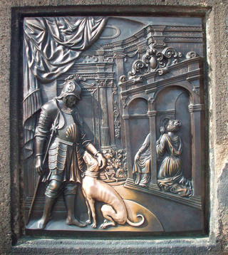
(image credit: Amy)
The statue of the crucifix and Calvary has a history going back to the medieval period and had undergone a number of changes since that time. It also has the distinctive golden Hebrew text on the cross itself. The statues depict the Virgin Mary and John the Evangelist (left image below):
(left image credit: Paul Burgoyne; right: Sage)
Also in Prague, the Cechuv Bridge was built in 1908. Two sculptures depicting fire bearers are on one side (right image above) - while there are statutes of multiple-headed hydras on the other (left image below). On the right is one of four bronze female sculptures of Genius by Antonína Poppa on the same bridge:

(images credit: Steve Thoroughgood, Andrew)
Located in Ljubljana, Slovenia, this bridge was originally named The Jubilee Bridge of the Emperor Franz Josef, in honour of the Habsburg ruler of the area when the structure was finished in 1901. However, it soon became known as the Dragon Bridge because of the four statues at each corner. One legend states that Greek mythological hero Jason founded the city of Ljubljana, where the Argonauts fought a killed a ferocious dragon, hence the statues... According to a local legend, the dragons will wag their tails when a virgin crosses the bridge! No indication if this has happened as yet, so stay tuned:
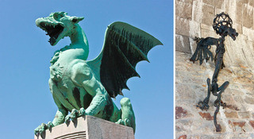
(images credit: Yan Vugenfirer)
Right image above: another weird dragon climbs the gate of the Ljubljana castle... he does seem really malnourished.
Also in Ljubljana, Butcher’s Bridge was first planned in the 1930s, but the project was shelved during World War II and only recently completed. Not long after it was opened, padlocks started to appear on the bridge’s steel wires. The locks were left there by couples in love, no doubt symbolizing their mutual devotion. Some of the locks are inscribed with names and dates, very romantic. Perhaps these are the skulls of the dragons slain by Jason and his Argonauts? -
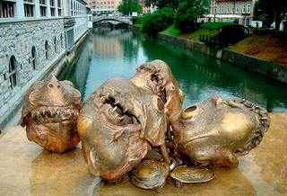
(image credit: Bryce Edwards)
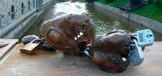
(image credit: Monica Spitzer)
This satyr is one of the larger sculptures There are some smaller ones depicting frogs and shellfish, as well as larger sculptures of Prometheus and Adam and Eve:

(image credit: Abaz Beganovic)
Here’s the Frog Bridge of Willimantic in Connecticut, also known as the Thread City Crossing. The four frogs are eleven feet tall and sit on top of spools of thread:
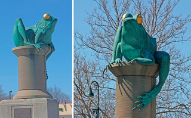
(image credit: Jim McElroy)
These are the new Highway Sculptures on the 24th Street Bridge in Council Bluffs, Iowa:

(image credit: S. C. Hargis Photography)
Here’s one of the four lions guarding the Washington’s Taft Bridge. The original ones were built in 1907, but deteriorated so much over the years that were replaced with duplicates in 2000 (left image). The sculptures on the Michigan Avenue Bridge in Chicago, dating from 1928, depict important events in the city’s history, such as the pioneers and early settlers in the area (right):
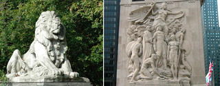
(left image credit: Kevin Anderson, Wally Gobetz)
The Pont Alexander III in Paris was built between 1896 and 1900 and is decorated with numerous statues. The columns at each end of the bridge feature gilded bronze statues of winged horses. On the right: a girl sits in a giant shell with a fish at her side, while holding another shell to her ear:

(images credit: Dominic, Karin McVicar)
The angelic creature on the left looks like its ready to attack:

(images credit: Avi Abrams)
The bridge also sports a marvelous little golden lizard:
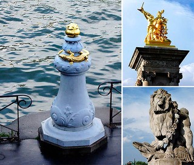
(image credit: Avi Abrams)
These rather striking sculptures can be found on a bridge spanning the Coventry Canal in the UK:
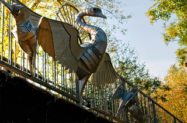
(image credit: Steve Hey)
The Ponte Sant’Angelo in Rome spans the Tiber in front of the Castel Sant’Angelo. The bridge features ten monumental statues of angels crafted by Bernini and his students:

(images credit: George Reader)
Each statue carries a symbol of Christ's passion:

(image via)
Baratashvili Bridge in Tbilisi, Georgia, was named in honour of Georgian romantic poet Nikoloz Baratashvili. It is also sometimes called the ‘Bridge of Love’ and the railings are decorated with bronze statues of romantic couples:

(images credit: Anna Barkhudarova)
The Green Bridge in Vilnius, Lithuania has four huge Soviet-era sculptures, which are the only communist monuments left in the city centre. The four sculptures at the bridge corners represent Agriculture, Guarding Peace, Industry and Construction, and Youth and Education. All very inspiring for the people, of course:
(images credit: FaceMePls)
The Anichkov Bridge in St. Petersburg is decorated with four equestrian sculptures, depicting the different stages in the taming of a horse. During World War II, the sculptures were removed from the bridge and buried, to protect them during the German attack and siege of the city (left image).

(images credit: Jens Jeppe, 2)
Also in St. Petersburg these griffins adorn Bank Bridge (right image above). If you ever visit, be sure to rub a griffin’s paw, so you can become rich. Hey, you can’t argue with a local legend like that.
The Lugou Bridge in Beijing is also known as the Marco Polo Bridge. Almost a thousand years old, the bridge has two rows of carved stone lions on top of the walls. There are over 500 (!) of them and no two lions are alike, all having different expressions:

(image credit: 1, 2)
This weird looking statue is on a bridge in Takayama, Gifu in Japan:

(images via)
Speaking of various animals on bridges, this bridge sports a... hamster! On the right is also an interesting bird figure:
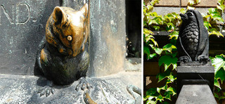
(images credit: Hajo)
Here is a very cute "Kappa Soup" turtle, spotted on the bridge in Yokohama, Japan:
(image credit: Toshihiro Oimatsu)
And finally, we have this somewhat bizarre creation is on the Cavenagh Bridge in Singapore. The image of children jumping into the river below has probably taken many an unsuspecting visitor by surprise over the years.
(image via)
CONTINUE TO "SCULPTURAL WEIRDNESS IN PUBLIC PLACES"! ->
ALSO CHECK OUT OUR AMAZING "ART" CATEGORY ->
(all images are copyright and by permission of their respective owners)
|
|
. . . |
|
|
|
|
Tweet |
|
2012-10-05T15:16:00.000-07:00
Archive: September 2012
Archive: September 2012
Fascinating Chemistry PhotosFantastic visuals at a point where science intersects art
Awesome Vintage CalculatorsHighly desirable objects of technological genius
"Flying Saucer" Soviet Architecture in CaucasusTruly "The House on the Borderland"
Unintentional Faces in Objects, Part 2There are some "things" in your house...
Ghost Towns of the Pacific Northwest: Bordeaux, WashingtonExploring Abandoned Places in the Land of Myst
Up, Up and Away: Building an Airship HouseH.G. Wells & Jules Verne would approve
September 30, 2012 - Biscotti BitsMixed Links & ImagesIncl. "The Alchemy of Light"
September 15, 2012 - Biscotti BitsMixed Links & ImagesIncl. "The Future Forms of Life"
Check out previous Biscotti & Feel-Good issues! - Click Here
Link Latte #188 - Click Here
Link Latte #189 - Click Here
Check out previous Link Latte issues! - Click HereCONTINUE READING! - NEXT PAGE ->Continue on to other monthly archives:
August 2012
July 2012
June 2012
May 2012
April 2012
March 2012
February 2012
Dec-Jan 2012
November 2011
October 2011
September 2011
August 2011
July 2011
June 2011
May 2011
April 2011
March 2011
February 2011
January 2011
December 2010
November 2010
October 2010
September 2010
August 2010
July 2010
June 2010
May 2010
April 2010
March 2010
Winter 2009-2010
Oct-Nov 2009
September 2009
August 2009
June-July 2009
May 2009
April 2009
March 2009
February 2009
January 2009
December 2008
November 2008
October 2008
September 2008
August 2008
July 2008
June 2008
May 2008
April 2008
March 2008
February 2008
January 2008
December 2007
November 2007
October 2007
September 2007
August 2007
July 2007
June 2007
May 2007
April 2007
March 2007
February 2007
January 2007
December 2006
November 2006
October 2006
Link Lattes
|
Fascinating Chemistry Photos
Fantastic visuals at a point where science intersects art
|
|
Awesome Vintage Calculators
Highly desirable objects of technological genius
|
|
"Flying Saucer" Soviet Architecture in Caucasus
Truly "The House on the Borderland"
|
|
Unintentional Faces in Objects, Part 2
There are some "things" in your house...
|
|
Ghost Towns of the Pacific Northwest: Bordeaux, Washington
Exploring Abandoned Places in the Land of Myst
|
|
Up, Up and Away: Building an Airship House
H.G. Wells & Jules Verne would approve
|
|
September 30, 2012 - Biscotti Bits
Mixed Links & Images
Incl. "The Alchemy of Light"
|
|
September 15, 2012 - Biscotti Bits
Mixed Links & Images
Incl. "The Future Forms of Life"
|
Check out previous Biscotti & Feel-Good issues! - Click Here
Link Latte #188 - Click Here
Link Latte #189 - Click Here
Check out previous Link Latte issues! - Click Here
CONTINUE READING! - NEXT PAGE ->Continue on to other monthly archives:
August 2012
July 2012
June 2012
May 2012
April 2012
March 2012
February 2012
Dec-Jan 2012
November 2011
October 2011
September 2011
August 2011
July 2011
June 2011
May 2011
April 2011
March 2011
February 2011
January 2011
December 2010
November 2010
October 2010
September 2010
August 2010
July 2010
June 2010
May 2010
April 2010
March 2010
Winter 2009-2010
Oct-Nov 2009
September 2009
August 2009
June-July 2009
May 2009
April 2009
March 2009
February 2009
January 2009
December 2008
November 2008
October 2008
September 2008
August 2008
July 2008
June 2008
May 2008
April 2008
March 2008
February 2008
January 2008
December 2007
November 2007
October 2007
September 2007
August 2007
July 2007
June 2007
May 2007
April 2007
March 2007
February 2007
January 2007
December 2006
November 2006
October 2006
Link Lattes
2012-10-02T17:05:00.000-07:00
The Alchemy of Light
The Alchemy of Light
Link
Scroll down for today's pictures & links.The Alchemy of Light
"The Alchemy of Light" is a live performance art made with "projection-mapping" technique. This extremely sophisticated and spectacular video was created by DandyPunk, the "New Weird" inspired by Cirque du Soleil:
Link
Today's pictures & links:Magical Scene Under the Arctic Ice
Free diving under the Arctic ice yielded this magical view... Photographer George Karbus writes to us: "This picture was taken during day time; the green colour is natural colour of White Sea waters." See more incredible Arctic Circle photography by George Karbus here.(image credit: George Karbus)
------------"Scale of the Moon" Comparisons
This could be a real eye-opener! It seems that the Moon is much bigger, but it is no larger than continental United States:(image via Reddit)
Alternatively, here is the continental U.S.A. floating in space instead of the Moon:(image credit: AdAgency)
------------Neat Aerodynamic Train in 1930s Sochi, Russia(image via)
------------
Mixed fresh links for today:
Newly-Discovered "Halo" Surrounds Milky Way Galaxy - [wow space]
Machine-Animals by Nicolas Lampert - [wow art]
Animal Photobombers! - [funny pics]
Japan Tech Giants are in a Free Fall - [thought-provoking]
NYT Magazine's "Inspiration Issue" - [very cool]
Geeky Piggy Banks - [geek tech]
Overthinking Star Wars - [neat article]
Great hi-res list of European Breweries - [cool map]
"The Poop Snake" in Dubai - [wow video]
"Your Life Online: Clairvoyant" Prank - [wow video]
"This Bus Is Coool!" Over-the-top commercial - [fun video]
Andy Goldsworthy: Naturalist Artist - [great videos, art]
Hipsters, and How They Spend Money - [infographic]
Oldest People in History - [neat info]
Really Ridiculous Photoshop Fail - [funny]
------------ Beautiful Shells: Muricidae family
Check out the whole diversity at Rotterdam's Natural History Museum catalogue. Keep scrolling for even more amazing shapes and unique shell treasures!(image credit: Joop Trausel & Frans Slieker, Natural History Museum, Rotterdam)
The Babelomurex echinatus kind seems to be the most fanciful (see on Google Image). Here are some of rare Babelomurex displayed at Zaurshells:(image via)
------------Profound gaze... from your morning cup of coffee(image credit: Anton Sergeev)
------------"The Sunken Village", by Christian Gerth
See more work by this wonderful artist from Switzerland.(image credit: Christian Gerth)
------------
The following is a short round-up of the best from our Facebook stream (which we update every day with unique material, not available on DRB otherwise):
Meanwhile in Russia... someone lost their USB drive! -(original unknown)
Las Vegas Strip in 1952:(original unknown)
Great use of the cow's tail! -(original unknown)
------------Flowing Geometry: "Reform Lighting"
This design Ryan Harvey really catches the eye with its refraction angles and gradients! Order it here.(images credit: Ryan Harvey, via)
------------Cat Terrorizing a Doll House
Here are a lot more of them. "Kat Kongs"? "Cat-zillas"?(image credit: FireATX, via Reddit)
------------Riding in Style!
------------
Problems with toilet paper? -(originals unknown)
Team to the Rescue! -READ THE PREVIOUS ISSUE ->READ ALL BISCOTTI ISSUES HERE ->Make sure to check our daily updates on Facebook!
. . .
TweetFollow @DRBlend
Link
Scroll down for today's pictures & links.
The Alchemy of Light
"The Alchemy of Light" is a live performance art made with "projection-mapping" technique. This extremely sophisticated and spectacular video was created by DandyPunk, the "New Weird" inspired by Cirque du Soleil:
Link
Today's pictures & links:
Magical Scene Under the Arctic Ice
Free diving under the Arctic ice yielded this magical view... Photographer George Karbus writes to us: "This picture was taken during day time; the green colour is natural colour of White Sea waters." See more incredible Arctic Circle photography by George Karbus here.
(image credit: George Karbus)
------------
"Scale of the Moon" Comparisons
This could be a real eye-opener! It seems that the Moon is much bigger, but it is no larger than continental United States:
(image via Reddit)
Alternatively, here is the continental U.S.A. floating in space instead of the Moon:
(image credit: AdAgency)
------------
Neat Aerodynamic Train in 1930s Sochi, Russia
(image via)
------------
Mixed fresh links for today:
Newly-Discovered "Halo" Surrounds Milky Way Galaxy - [wow space]
Machine-Animals by Nicolas Lampert - [wow art]
Animal Photobombers! - [funny pics]
Japan Tech Giants are in a Free Fall - [thought-provoking]
NYT Magazine's "Inspiration Issue" - [very cool]
Geeky Piggy Banks - [geek tech]
Overthinking Star Wars - [neat article]
Great hi-res list of European Breweries - [cool map]
"The Poop Snake" in Dubai - [wow video]
"Your Life Online: Clairvoyant" Prank - [wow video]
"This Bus Is Coool!" Over-the-top commercial - [fun video]
Andy Goldsworthy: Naturalist Artist - [great videos, art]
Hipsters, and How They Spend Money - [infographic]
Oldest People in History - [neat info]
Really Ridiculous Photoshop Fail - [funny]
------------
Beautiful Shells: Muricidae family
Check out the whole diversity at Rotterdam's Natural History Museum catalogue. Keep scrolling for even more amazing shapes and unique shell treasures!

(image credit: Joop Trausel & Frans Slieker, Natural History Museum, Rotterdam)
The Babelomurex echinatus kind seems to be the most fanciful (see on Google Image). Here are some of rare Babelomurex displayed at Zaurshells:
(image via)
------------
Profound gaze... from your morning cup of coffee
(image credit: Anton Sergeev)
------------
"The Sunken Village", by Christian Gerth
See more work by this wonderful artist from Switzerland.
(image credit: Christian Gerth)
------------
The following is a short round-up of the best from our Facebook stream (which we update every day with unique material, not available on DRB otherwise):
Meanwhile in Russia... someone lost their USB drive! -
(original unknown)
Las Vegas Strip in 1952:
(original unknown)
Great use of the cow's tail! -
(original unknown)
------------
Flowing Geometry: "Reform Lighting"
This design Ryan Harvey really catches the eye with its refraction angles and gradients! Order it here.
(images credit: Ryan Harvey, via)
------------
Cat Terrorizing a Doll House
Here are a lot more of them. "Kat Kongs"? "Cat-zillas"?
(image credit: FireATX, via Reddit)
------------
Riding in Style!
------------
Problems with toilet paper? -
(originals unknown)
Team to the Rescue! -
READ THE PREVIOUS ISSUE ->
READ ALL BISCOTTI ISSUES HERE ->
Make sure to check our daily updates on Facebook!
|
|
. . . |
|
|
|
|
TweetFollow @DRBlend |
|
2012-09-24T12:20:00.001-07:00
Awesome Vintage Calculators
Awesome Vintage Calculators
"QUANTUM SHOT" #798
Link - article by Simon Rose and Avi Abrams Highly desirable objects of technological genius! (this article is NOT about the new iPhone 5, sorry)
These days it seems like there’s another new gadget every other week, whether it’s a phone, handheld device, tablet computer, laptop or some other hi-tech innovation. We’ve certainly come a long way from the days when everyone was getting the latest pocket calculator, marveling at the technology of these machines when they came into the mainstream back in the seventies. This time at Dark Roasted Blend, we take a look at some calculators from years gone by.
We already wrote at length about beautiful and intricate Curta calculators, but here is something even more impressive - made back in 1788:(image credit: Florian, all rights reserved)(images via "History of Computers")
The calculating machines of Johann Helfrich Müller look more like Victorian Time Machines than calculators!(image credit: Heinz Nixdorf MuseumsForum, Paderborn, Germany)
Johann Helfrich von Müller (January 16, 1746 – 1830) "was an engineer in the Hessian army who conceived the Difference Engine in 1786". He has also designed - among other things - a large and powerful burning mirror, a sun clock, an air pump, an air gun, a barometer, a range finder device, etc. Read his biography here.
Such a marvelously detailed, delicate and rare device! Read more about the machine and how it worked here:(image credit: Nick Stahlkocher, via)
The W. T. Odhner arithmometer from 1890, manufactured in St. Petersburg - part of the extensive collection of Sergei Frolov who tries to raise money to create Soviet Digital Electronics Museum:(image credit: Sergei Frolov, Soviet Digital Electronics Museum)
The Adall Calculator was manufactured in England from around 1910 and into the 1920s:(images courtesy John wolff's Web Museum)
Also from England, the Adder single-column adding machine was first seen around 1902 (left image)... and on the right you can see the Comptator adding machine, made in Germany in the twenties:(images courtesy John wolff's Web Museum)
This is a 1920s Monroe High Speed Adding Calculator, although it was doubtless pretty slow when compared to today’s technology:(image credit: Mark Wahl)
Here’s another couple of machines made by Monroe in a bygone era:(images credit: Cleo McCall, Don Juan Tenorio)
A few advertisements for Monroe Adding Calculators, seen in the LIFE magazine in the 1940s:(Monroe Adding Calculator, via LIFE Magazine)
The Baby Calculator was first manufactured in Chicago in 1929 and this one dates from about 1940:(images credit: Kees Nagtegaal, Computer History Museum)
The Remington Rand Calculator model 73P was common in the early fifties (advertised as "Weapon Against Time"):(image credit: Gerson Lessa)
How about this Contex Mechanical Adding Machine from Denmark in 1955? (left) - on the right is the Olympia RAE 4-15:(images credit: Gerson Lessa, Daniel Sancho)
Also from the fifties, the Peter Pan Adding Machine was made in England and was set up to complete decimal calculations:(images credit: John wolff, Slide Rule Museum)
Right image above is the Addiator from Germany, a "flat mechanical hand-held 'Troncet Type' mechanical calculator" introduced in 1920.
This Exactus calculator was designed for the old sterling currency used in the UK until its replacement by decimal currency in 1971 (left), and another Addiator:(images credit: Kees Nagtegaal, Mechanicalculator)
Here is the Russian version of the Addiator, called "The Progress":"Feliks-M" was the type of Russian mechanical calculators based on original 1890s arithmometers:(image credit: George Shuklin)
Not a wizard at math? You could always make use of the Wizard calculating machine shown here on the left:(left image credit: Mike Perl, England; right - via)
The right image above shows a t-shirt you can order to advertise your love of vintage calculating machines, order it here.
This Soviet calculator was made by Electronika. Models similar to these were apparently the sole brand of calculators sold and used throughout the country back then (left). The Elka 103 Bulgarian calculator dates from the seventies (right):(images via 1, Richie Wisbey)
Here’s the 1961 Facit C1-13 mechanical calculator:(image credit: www.scientificcollectables.com)
The Victor 3900 Electronic Desktop Calculator is from later in the same decade.(image via Vintage Electronics)
Machines such as this full keyboard model made by Burroughs were seen in many offices and other commercial premises, until eventually replaced by electronic printing calculators in the 1970s. This one was designed for calculations in the UK’s pre-decimal sterling currency:(images via Vintage Calculators, John wolf, History of Computers)
This family of Burroughs Portable 1957 Class 5 has some nicely rounded shapes:(image via)
Here are some programmable desktop calculators, the Canon Canola 1614P (top left), the Compucorp 425G (top right), the Casio model 121-E desk calculator made in 1973 (bottom left), and the Rockwell 940 machine which was commonplace in the seventies too (bottom right):(images credit: Daniel Sancho, Mike, Calculator Museum)
Your own portable math expert, the Little Professor quizzing calculator was first seen in 1976 (left). On a similar theme, here’s the WIZ-A-TRON electronic teaching calculator from around the same time (right):(images credit: www.oaktreevintage.com, The Strong Online Collections)
If you only had a thin or narrow pocket in which to keep your calculator, Texas Instruments sold this model in the late seventies:(image credit: www.oaktreevintage.com)
Need to write and add things up at the same time? How about the Calcu-pen from the mid seventies?(image credit: Cleo McCall)
If you didn’t have room in your pocket for a calculator, why not wear one on your wrist? -(image via)
Alternatively, there was this HUGE - literally fridge-size! - calculator from 1951, made by IBM:(image via)
This boy from 1860 sells the abacus "calculators" (remember these?) in St. Petersburg. Soon electronic calculators, together with the abacus and other vintage adding device, will join a collectible (and pretty much extinct) niche of obsolete technology, so it is a good idea to hang on to a few still surviving examples -(photo by William Carrick, via)CONTINUE TO "STUNNINGLY INTRICATE CURTA CALCULATORS"! ->READ THE REST OF OUR "AMAZING GADGETS" SERIES ->(all images are by exclusive permission of respective owners, wherever credit is known)
. . .
Tweet
"QUANTUM SHOT" #798
Link - article by Simon Rose and Avi Abrams
Highly desirable objects of technological genius!
(this article is NOT about the new iPhone 5, sorry)
These days it seems like there’s another new gadget every other week, whether it’s a phone, handheld device, tablet computer, laptop or some other hi-tech innovation. We’ve certainly come a long way from the days when everyone was getting the latest pocket calculator, marveling at the technology of these machines when they came into the mainstream back in the seventies. This time at Dark Roasted Blend, we take a look at some calculators from years gone by.
We already wrote at length about beautiful and intricate Curta calculators, but here is something even more impressive - made back in 1788:
(image credit: Florian, all rights reserved)
(images via "History of Computers")
The calculating machines of Johann Helfrich Müller look more like Victorian Time Machines than calculators!
(image credit: Heinz Nixdorf MuseumsForum, Paderborn, Germany)
Johann Helfrich von Müller (January 16, 1746 – 1830) "was an engineer in the Hessian army who conceived the Difference Engine in 1786". He has also designed - among other things - a large and powerful burning mirror, a sun clock, an air pump, an air gun, a barometer, a range finder device, etc. Read his biography here.
Such a marvelously detailed, delicate and rare device! Read more about the machine and how it worked here:
(image credit: Nick Stahlkocher, via)
The W. T. Odhner arithmometer from 1890, manufactured in St. Petersburg - part of the extensive collection of Sergei Frolov who tries to raise money to create Soviet Digital Electronics Museum:
(image credit: Sergei Frolov, Soviet Digital Electronics Museum)
The Adall Calculator was manufactured in England from around 1910 and into the 1920s:
(images courtesy John wolff's Web Museum)
Also from England, the Adder single-column adding machine was first seen around 1902 (left image)... and on the right you can see the Comptator adding machine, made in Germany in the twenties:
(images courtesy John wolff's Web Museum)
This is a 1920s Monroe High Speed Adding Calculator, although it was doubtless pretty slow when compared to today’s technology:
(image credit: Mark Wahl)
Here’s another couple of machines made by Monroe in a bygone era:
(images credit: Cleo McCall, Don Juan Tenorio)
A few advertisements for Monroe Adding Calculators, seen in the LIFE magazine in the 1940s:


(Monroe Adding Calculator, via LIFE Magazine)
The Baby Calculator was first manufactured in Chicago in 1929 and this one dates from about 1940:
(images credit: Kees Nagtegaal, Computer History Museum)
The Remington Rand Calculator model 73P was common in the early fifties (advertised as "Weapon Against Time"):
(image credit: Gerson Lessa)
How about this Contex Mechanical Adding Machine from Denmark in 1955? (left) - on the right is the Olympia RAE 4-15:
(images credit: Gerson Lessa, Daniel Sancho)
Also from the fifties, the Peter Pan Adding Machine was made in England and was set up to complete decimal calculations:
(images credit: John wolff, Slide Rule Museum)
Right image above is the Addiator from Germany, a "flat mechanical hand-held 'Troncet Type' mechanical calculator" introduced in 1920.
This Exactus calculator was designed for the old sterling currency used in the UK until its replacement by decimal currency in 1971 (left), and another Addiator:
(images credit: Kees Nagtegaal, Mechanicalculator)
Here is the Russian version of the Addiator, called "The Progress":
"Feliks-M" was the type of Russian mechanical calculators based on original 1890s arithmometers:
(image credit: George Shuklin)
Not a wizard at math? You could always make use of the Wizard calculating machine shown here on the left:
(left image credit: Mike Perl, England; right - via)
The right image above shows a t-shirt you can order to advertise your love of vintage calculating machines, order it here.
This Soviet calculator was made by Electronika. Models similar to these were apparently the sole brand of calculators sold and used throughout the country back then (left). The Elka 103 Bulgarian calculator dates from the seventies (right):
(images via 1, Richie Wisbey)
Here’s the 1961 Facit C1-13 mechanical calculator:
(image credit: www.scientificcollectables.com)
The Victor 3900 Electronic Desktop Calculator is from later in the same decade.
(image via Vintage Electronics)
Machines such as this full keyboard model made by Burroughs were seen in many offices and other commercial premises, until eventually replaced by electronic printing calculators in the 1970s. This one was designed for calculations in the UK’s pre-decimal sterling currency:
(images via Vintage Calculators, John wolf, History of Computers)
This family of Burroughs Portable 1957 Class 5 has some nicely rounded shapes:
(image via)
Here are some programmable desktop calculators, the Canon Canola 1614P (top left), the Compucorp 425G (top right), the Casio model 121-E desk calculator made in 1973 (bottom left), and the Rockwell 940 machine which was commonplace in the seventies too (bottom right):
(images credit: Daniel Sancho, Mike, Calculator Museum)
Your own portable math expert, the Little Professor quizzing calculator was first seen in 1976 (left). On a similar theme, here’s the WIZ-A-TRON electronic teaching calculator from around the same time (right):
(images credit: www.oaktreevintage.com, The Strong Online Collections)
If you only had a thin or narrow pocket in which to keep your calculator, Texas Instruments sold this model in the late seventies:
(image credit: www.oaktreevintage.com)
Need to write and add things up at the same time? How about the Calcu-pen from the mid seventies?
(image credit: Cleo McCall)
If you didn’t have room in your pocket for a calculator, why not wear one on your wrist? -
(image via)
Alternatively, there was this HUGE - literally fridge-size! - calculator from 1951, made by IBM:
(image via)
This boy from 1860 sells the abacus "calculators" (remember these?) in St. Petersburg. Soon electronic calculators, together with the abacus and other vintage adding device, will join a collectible (and pretty much extinct) niche of obsolete technology, so it is a good idea to hang on to a few still surviving examples -
(photo by William Carrick, via)
CONTINUE TO "STUNNINGLY INTRICATE CURTA CALCULATORS"! ->
READ THE REST OF OUR "AMAZING GADGETS" SERIES ->
(all images are by exclusive permission of respective owners, wherever credit is known)
|
|
. . . |
|
|
|
|
Tweet |
|
2012-09-18T20:45:00.000-07:00
Link Latte 188
Link Latte 188
#188 - Week of September 17, 2012
Scientists Consider the Warp Drive! - [great news]
The Death of Kosmograd - [abandoned, Russia]
They might build these in Ukraine - [good idea?]
"Convoy" (part of China vs. Japan protests) - [crazy pic]
Monsters on Antique Maps - [great article]
Lightning, like you never seen it before - [wow pic]
The Ill-Fated Chicago Spire - [architecture]
Neat Food Micro-Photography, gallery - [wow pics]
Industrial Waste Bins as Art - [weird art]
Classrooms Around the World - [neat gallery]
Is This Still A "Chilling Possibility"? - [extreme weather]
Incredible Photos of the Coconut Crab- [wow nature]
Cost-of-Living Comparisons btw. Any Country or City - [useful site!]
"The Mighty Hand!" Great vintage ad series - [flickr set]
Most Bizarre Bathtubs - [design]
Hmm... making roads out of solar panels? - [interesting video]
Somewhere in Siberia... info - [wow tech]
William Gibson Speaks Again - [cool interview]
A Cure for Greed (unexpected) - [weird item]
Literature vs. Traffic in Melbourne - [street art]
The Popinator! Say the "Pop" word. - [fun video]
You've seen "Gangnam Style"; Now see Hitler doing it - [videos]
Parking "Like a Boss"? more - [wow videos]
Chuck Norris in Chuckville - [time-waster]
Mini-Velo: what a ride! - [fun video]
Coupled Systems: Synchronization of Metronomes - [wow videos]
The Art of Ironing - [very cool video]
Welcome to Beardsland!, info! - [weird video, animated violence]
Carlton Beer Police Chase - [funny video ad]
Zombie Survival Kit on Neatoshop - [gear]
Google Play Store - [resource]
Unusual Mosques from Around the World - [compilation]SEE ALL OTHER LINK LATTE ISSUES HERE
#188 -
Week of September 17, 2012
Scientists Consider the Warp Drive! -
[great news]
The Death of Kosmograd -
[abandoned, Russia]
They might build these in Ukraine -
[good idea?]
"Convoy" (part of China vs. Japan protests) -
[crazy pic]
Monsters on Antique Maps -
[great article]
Lightning, like you never seen it before -
[wow pic]
The Ill-Fated Chicago Spire -
[architecture]
Neat Food Micro-Photography, gallery -
[wow pics]
Industrial Waste Bins as Art -
[weird art]
Classrooms Around the World -
[neat gallery]
Is This Still A "Chilling Possibility"? -
[extreme weather]
Incredible Photos of the Coconut Crab-
[wow nature]
Cost-of-Living Comparisons btw. Any Country or City -
[useful site!]
"The Mighty Hand!" Great vintage ad series -
[flickr set]
Most Bizarre Bathtubs -
[design]
Hmm... making roads out of solar panels? -
[interesting video]
Somewhere in Siberia... info -
[wow tech]
William Gibson Speaks Again -
[cool interview]
A Cure for Greed (unexpected) -
[weird item]
Literature vs. Traffic in Melbourne -
[street art]
The Popinator! Say the "Pop" word. -
[fun video]
You've seen "Gangnam Style"; Now see Hitler doing it -
[videos]
Parking "Like a Boss"? more -
[wow videos]
Chuck Norris in Chuckville -
[time-waster]
Mini-Velo: what a ride! -
[fun video]
Coupled Systems: Synchronization of Metronomes -
[wow videos]
The Art of Ironing -
[very cool video]
Welcome to Beardsland!, info! -
[weird video, animated violence]
Carlton Beer Police Chase -
[funny video ad]
Zombie Survival Kit on Neatoshop -
[gear]
Google Play Store -
[resource]
Unusual Mosques from Around the World -
[compilation]SEE ALL OTHER LINK LATTE ISSUES HERE